Ett kapitel baserat på praktiska erfarenheter
Statligt ägda RISE, Research Institutes of Sweden, har ett regeringsuppdrag att bidra till omställning mot ett hållbart samhälle. Tillsammans med aktörer från olika delar av samhället, utforskar vi hur vi kan skapa förändring på nya sätt.
Vi gör detta genom samverkan och deltagande processer i form av exempelvis forskningsprojekt, direktuppdrag, partnerskap, eller som inbjudna experter. Våra erfarenheter kommer från samarbeten med offentlig sektor, myndigheter, privata bolag, civilsamhället, kulturnäringen, samt universitet och skolor.
Som boken visar, kan transformationen och olika roller inom den vara av olika och skiftande karaktär. Faciliteringen speglar detta:
Vi kan behöva facilitera allt från kortare workshops till processer som sträcker sig över flera år, vi kan coacha tillfälligt eller vara djupt involverade, det kan handla om något litet och lokalt eller om internationella multi-aktörsinitiativ.
Vi kan också vara med i olika skeden. Från tidigt prototypande till färdiga tekniska lösningar, från det som är här och nu - till det som ligger långt fram i framtiden. Det kan vara att skapa grundläggande medvetenhet, eller en hel utbildning i särskilda färdigheter.
Om tidigare kapitel byggt på observationer, teorier, tips och förslag, så är det här kapitlet där vi ser på hur man i en extern roll eller i forskningsprojekt kan stötta transformation.
Vi hoppas inspirera dig som har och tar liknande roller, och bjuda in till reflektion över vilket stöd du, ditt nätverk eller din organisation kan behöva.
Kapitlets upplägg: På nästa uppslag beskriver vi sex sätt att katalysera transformation, och dessa bildar strukturen för kapitlet. Tanken är att ge inspiration, det är inte en heltäckande beskrivning av alla sätt att facilitera transformation (om det nu fanns).
Exempel från praktiken: Varje del illustreras av ett par exempel som skrivits av våra kollegor på Prototypande Samhälle (rosa bakgrund). För att boken skulle bli bärbar snarare än släpbar så har vi valt att lägga ytterligare exempel i en nedladdningsbar PDF-fil.
Scanna QR-koden eller gå till https://www.ri.se/sv/expertisomraden/expertiser/systemisk-transformation
Event Föreläsningar Utveckling av ramverk och aktiviteter som öppnar upp för systemförståelse och vidgade perspektiv
Att facilitera transformation:
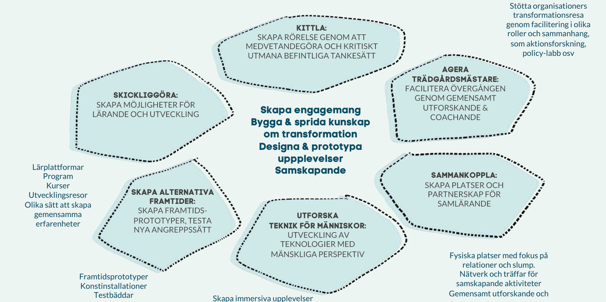
Stötta organisationers transformationsresa genom facilitering i olika roller och sammanhang, som aktionsforskning, policy-labb osv
Fysiska platser med fokus på relationer och slump. Nätverk och träffar för samskapande aktiviteter Gemensamt utforskande och delande av upplevelser och inspiration
Skapa immersiva upplevelser Stötta teknologiutveckling och teknik-implementering med människan i centrum
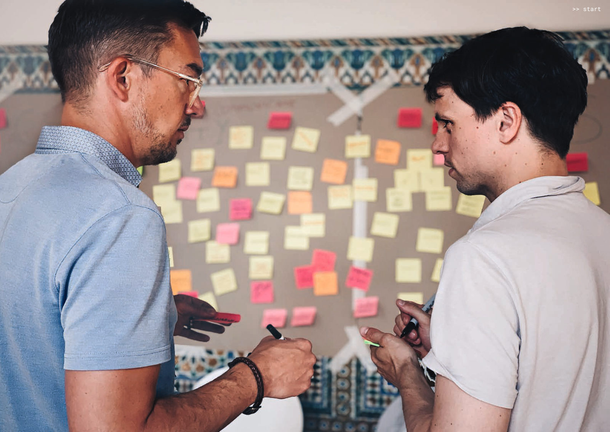
Hur navigerar vi komplexa sammanhang? Forskare, offentlig sektor & processledare möts och delar erfarenheter för att hitta sätt att bryta mönster, och skapa nya utbildningsmöjligheter
Pusselbitar med tydliga kanter? Nej.
Bilden på föregående sida är ett försök att pedagogiskt kategorisera viktiga beståndsdelar i arbetet med att stötta, facilitera och katalysera systemisk transformation. I verkligheten är det ju inte så enkelt.
Större projekt och initiativ inkluderar ofta flera delar. Ibland är det medvetet och planerat från början. Eller så växer det fram när man utgått från behov och längs vägen inser vilka insatser som behövs.
Ofta startar det konkret. Vi ska facilitera en samarbetsprocess. Vi ska skapa och hålla en utbildning. Vi ska skapa en mötesplats. Vi ska ta fram en framtidsprototyp eller en interaktiv upplevelse. Vi utforskar en teknisk lösning. Vi ska göra ett policylabb.
Men sedan utvecklas det vidare. När vi jobbar med framväxande processer, kan vi inte alltid själva definiera exakt vad det är som händer, och ibland är det något annat som skapas än det vi trodde från början – genom vem som deltar, vilken riktning som ändrades eller genom de ringar på vattnet och förgreningar som uppstår. Lärande uppstår på oväntade ställen.
Ett exempel är att vi ofta landar i ”vi måste skapa medvetenhet”, Det kan göras på många olika sätt; regelrätt utbildande, genom att delta i en förändringsresa, genom att samverka med andra.
När vi ser på våra kollegors projekt så ser vi att en stor andel bidrar till systemisk transformation - i stor eller liten skala, med typisk eller udda ansats. Alla skulle nog inte tänka ”jag jobbar med systemisk transformation” – men det är just det vi vill få fler att känna.
Kategorier som överlappar, utan skarpa gränser
Exempel: Viable Cities
Ett exempel på den här typen av överlapp är Viable Cities, ett strategiskt innovationsprogram inom missionen Klimatneutrala städer 2030. Programmet arbetar med 48 svenska städer och nationella myndigheter, utifrån tanken att det inte är experter på programkontor som ska tala om för andra vad de ska göra. Istället utforskar och lär man tillsammans i olika format, för att accelerera transformation.
Inom Viable Cities samverkar i princip alla de beståndsdelarna som beskrivs på föregående sida, tätt hoptrasslade:
- Processledare tar en viktig roll i att leda omställnings- och förändringsarbete i städerna, och i byggandet av omställningsteam.
- De skapar omställningsarenor där stadens aktörer samarbetar för att identifiera och implementera lösningar för klimatomställning.
- Storytelling används för att förenkla och förändra narrativet, och för att engagera fler i klimatomställningsarbetet.
- Governance-arbete pågår, genom att samarbete över sektorsgränser främjas. Silos bryts ner för att utveckla lösningar i skärningspunkten mellan olika sektorer och aktörer.
Övergripande principer och arbetssätt
En tvärvetenskaplig, prototypande ansats
Våra tillvägagångssätt färgar våra erfarenheter – och vice versa. Detta har färgat den här boken. Det finns inte en metod eller ett upplägg, men det finns ett antal gemensamma nämnare.
Holistiskt, tvärvetenskapligt
Vi jobbar tvärvetenskapligt och tvär-erfarenhetsmässigt, med tydlig förankring i lokal- och/eller systemkontext. Vi är forskare med olika typer av expertis och metoder, designers, dokumentärfilmare, programmerare. Flera har praktisk erfarenhet från utbildningsvärlden, myndigheter och offentlig sektor, kanske som projektledare och innovationsledare. Ofta jobbar vi med framväxande processer där vi säger att vi ”prototypar”.
Vad innebär det att prototypa och vad är en prototyp?
Som vi beskrev i kapitel 5 (avsnittet ”att arbeta med framväxande processer”), så handlar det om att använda materiella, visuella och sensoriska arbetssätt som fokuserar på upplevelser - något som går att se, ta på eller på andra sätt uppleva, med hjärnan, hjärtat och kroppen.
En prototyp är en visuell manifestation av en idé, koncept, möjlighet, och kärnan i att jobba designinriktat med sådant som växer fram. Prototypen är något ofärdigt – ett steg på väg mot något annat, något som är föränderligt, något att interagera med. Det är alltså inte en nästan-kopia av något färdigt, utan ett verktyg. Vi prototypar av olika anledningar, vilket gör att prototyperna också kommer att ha olika karaktär.
Prototypande kan handla om att:
- Utveckla idéer och koncept, samt konkretisera idén/konceptet:vad som händer, vem som gör vad, vad någon använder, osv. Själva interaktionen med olika material ger upphov till nya idéer och insikter.
- Ge möjlighet till feedback, skapa en upplevelse som andra kan interagera med och reagera på, för att förstå vad som kanske fungerar och för att komma vidare i experimenterandet.
- Kommunicera ett koncept, till exempel med andra som deltar i utveckling eller beslutsfattare.
Tidigt i processen prototypar vi ”grovt” eller ”snabbt och slarvigt” – det handlar om att behålla känslan av att det är något föränderligt. Så fort vi suttit ner och gjort något med omsorg, blir det en idé som är svår att släppa och göra om.
Spekulativ design / framtidsprototyper. Vi använder också ordet prototyp för att beskriva fristående upplevelser, med avsikt att skapa eftertanke och ändrade beteenden. Ofta har vi här en mer konstnärlig ansats som kallas för spekulativ design, där man skapar en provokation - något som väcker känslor och tankar - som i sin tur sår frön till förändring. Det kan vara en interaktiv skulptur, ett framtidsscenario, en performance, en berättelse, eller en dikt. Bland mycket annat.
Här i kapitel 8, kommer vi ta upp exempel på hur vi jobbar med designansats och prototypande när vi faciliterar transformation. Vi börjar med att kort beskriva hur inspiration från konst och design på olika sätt hjälper oss att stötta transformation.
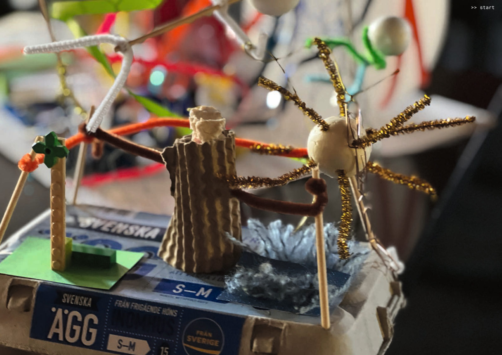
Prototyp från en workshop om mikro-krediter som sätt att stärka status på olika typer av lärande, för att inkludera fler på nya sätt på arbetsmarknaden.
Prototypen gjordes som del av gruppdiskussioner, och för varje element som lades till och varje skratt som uppstod, fördjupades och katalyserades samtalet och nya idéer skapades.
“Att prototypa är inte bara att bygga något fysiskt, utan att skapa något som utmanar det befintliga. Prototypen tvingar fram autentiskt engagemang och fungerar som en katalysator för förändring. Den gör det svårt för människor att gömma sig bakom roller eller mandat. En prototyp kan påverka mycket mer än själva objektet – den förändrar samarbeten, språkbruk och kan bli en symbol för förändring i en organisation. Design och prototypande beskrivs som modiga handlingar, nödvändiga för verklig förändring”
“Att prototypa är ett sätt att skapa konkreta guidelines till halvt fungerande processer, så att nästa grupp slipper fastna med ett tomt papper, eller överväldigas av alla svårigheter och parametrar som behöver hanteras. Att kunna visa att ”det här är ETT sätt” - skapar ett lugn och tar arbetet framåt”
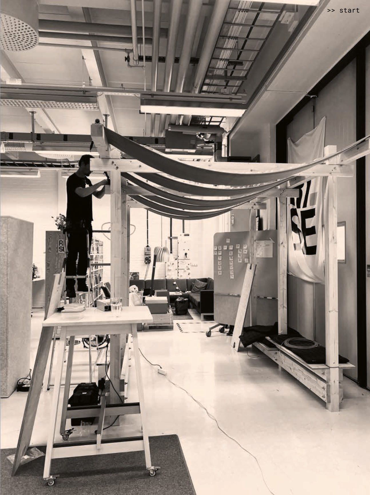
Inspiration från konst och design
För att stödja experimenterande och utforskande under systemtransformations-processer behöver vi kreativa metoder, praktik och arbetssätt. Konstnärliga och designbaserade praktiker kan vara viktiga möjliggörare i dessa processer –för att engagera hela personen i samskapandet, där tanke, känsla, vilja, intuition och fantasi aktiveras. Detta underlättar också utforskandet av nya perspektiv, insikter och kunskapsformer i en gemensam lärandeprocess.
Ett konstnärligt förhållningssätt, inspirerat av design och konst, kan hjälpa deltagare i transformativa processer att sakta ner, sätta sina omedelbara bedömanden och analytiska förhållningssätt åt sidan - och istället öppna upp för ett intensivt lyssnande på djupet. Ja faktiskt en aktivering av alla sinnen.
Genom kreativa praktiker bjuds deltagarna in att omformulera problem, tänka i nya banor och utforska alternativa sätt att förstå både nuet och möjliga framtider.
Dessa metoder ger möjlighet att utforska hur tanke, affekt och sinnesintryck kan kopplas samman på mer intima och dynamiska sätt, där motsägelser och osäkerhet får finnas kvar som en del av processen. De uppmuntrar oss att möta det okända och att omorientera vårt invanda behov av kontroll och säkerhet.
Genom att stödja en mångfald av kunskapsperspektiv, hjälper dessa metoder oss att vidga blicken bortom det personliga och mellanmänskliga, så att vi istället kan se den större helheten och de framtida möjligheter som är på väg att ta form.
Design och konst kan användas på många olika sätt inom transformativa processer.
- Deltagare kan kollektivt engagera sig i konstnärliga verk för att få nya perspektiv, skapa egna konst- och designprototyper eller använda kreativa metoder, inspirerade av konst och design, för att utveckla och testa nya arbetsmetoder.
- Konstnärer och designers kan också bjudas in som medfacilitatorer i transformationsprocesser. Eller som skapare av konstverk och designpromptar som möjliggör utforskandet av alternativa sätt att förstå nuet och framtiden. Deras bidrag kan öppna upp för nya insikter, experimenterande och samskapande av framtiden.
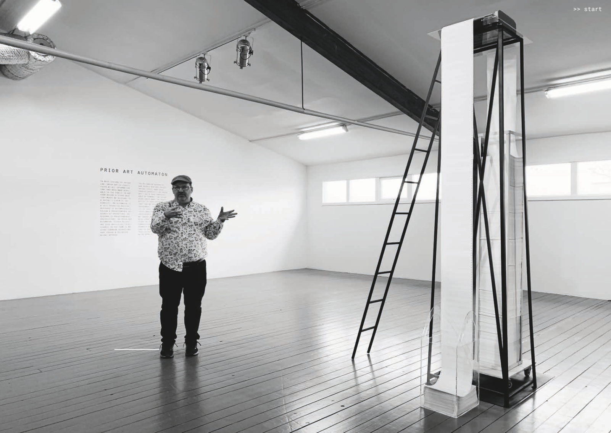
Samarbete med Studio Alight och deras utställning Rob Law. Att under en workshop ha med konstnärerna som processledare, att arbeta i deras studiomiljö och interagera med deras konstinstallationer, bidrog till nya perspektiv på den fråga man utforskade. Deltagarna fick syn på sina egna sätt att arbeta, och processen bidrog till att flera deltagare utforskade sin kreativitet på nya sätt.
Tillsammans-arbete
I arbetet med samhällstransformation och hållbar omställning är samarbete en nödvändighet. Detta är inte en uppgift för en individ, utan ett kollektivt åtagande. För att lyckas behöver vi utveckla förmågan att arbeta tillsammans i en gemensam riktning. Detta innefattar modet att utforska nya metoder och vara öppen för varandras kompetenser och arbetssätt.
Resan kan vara både krävande och utmanande, men den erbjuder också möjligheter till utveckling och kollektiv framgång. Genom att omfamna osäkerhet och förändring kan vi tillsammans skapa hållbara och positiva förändringar i samhället.
Platser, nätverk och facilitatorer spelar en central roll i denna process. De skapar utrymmen där nyfikenhet och samarbete kan frodas, och där vi kan lära oss av varandra för att uppnå det vi vill. Vi måste ifrågasätta traditionella metoder och vara beredda att anpassa oss, för att möta de utmaningar vi står inför.
I det här kapitlet går vi bland annat in på olika faciliterarroller, metoder och på den erfarenhet och känslighet som krävs. Vi skriver om platser, sociala sammanhang och partnerskap för samlärande och öppenhet.
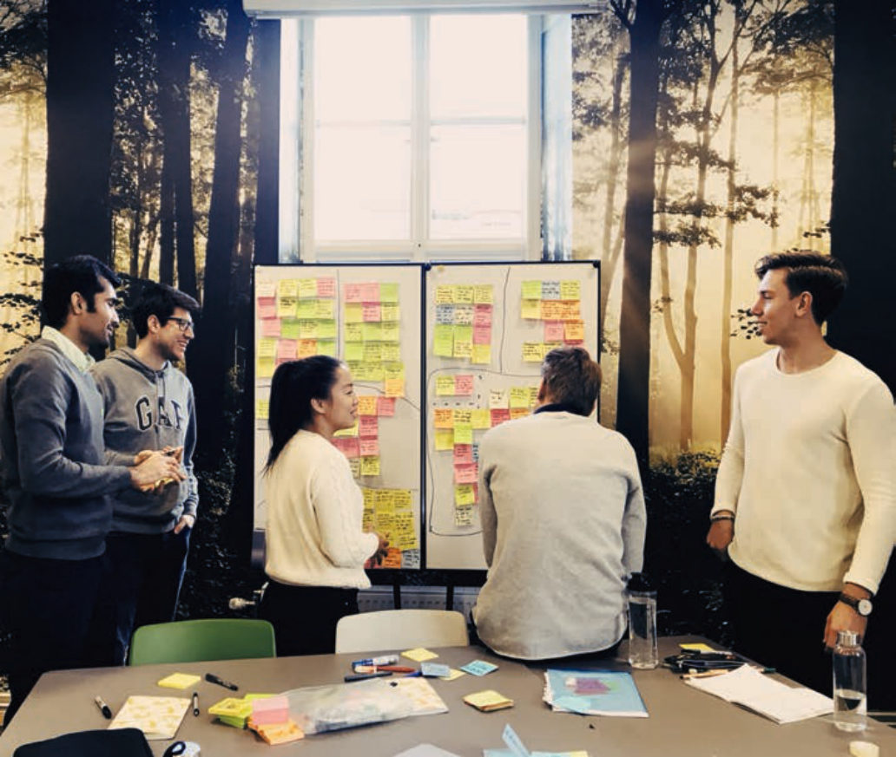
En miljö och en kultur som ger plats för prototypande och samlärande
Neospace på Lindholmen i Göteborg, är ett av avdelningen Prototypande Samhälles kontor, och är inrymt i tidigare gamla varvslokaler. Idag är det en öppen labbmiljö där kontorsytor delar plats med lager, fin- och grovmekanisk verkstad samt mötes- och workshopytor. Platsen har utvecklats till en dynamisk och kreativ miljö som uppmuntrar till utforskande och samtal.
Workshopytan har mängder av taktila hjälpmedel såsom klossar, lego, garn och whiteboards för att uppmuntra till nya tankesätt och samtal. Att leka och skapa är en viktig del av den kognitiva processen. I samma utrymme finns en lägereld och mjuka soffor för att stimulera till eftertänksam dialog och medveten samvaro.
På samma sätt som de fysiska ytorna är mångsidiga, är det stor spridning på kunskaps- och fokusområden bland de anställda som verkar där. Kombinerat skapar detta en miljö där frågan alltid är fri och där fokuset ligger på möjligheter snarare än hinder. Frågeställningar och idéer kan ställas mot mängder av livs- och yrkeserfarenheter på en och samma plats.
Neospace samskapades av medarbetarna i samband med en kontorsflytt. Det har bidragit till en unik kultur som medarbetarna värnar om. En kultur som genomsyras av tillåtande, nyfikenhet och utforskande. Lokalen ses i sig själv som en prototyp i ständig omvandling när medarbetarna upptäcker nya behov. Även misslyckanden ger ny kunskap och nya data, och ses därför som en naturlig del i processen. Då man lägger stor vikt vid kultur, finns medarbetare med särskilt uppdrag att ta hand om miljön och upprätthålla värmen och samskapandet, både praktiskt och känslomässigt.
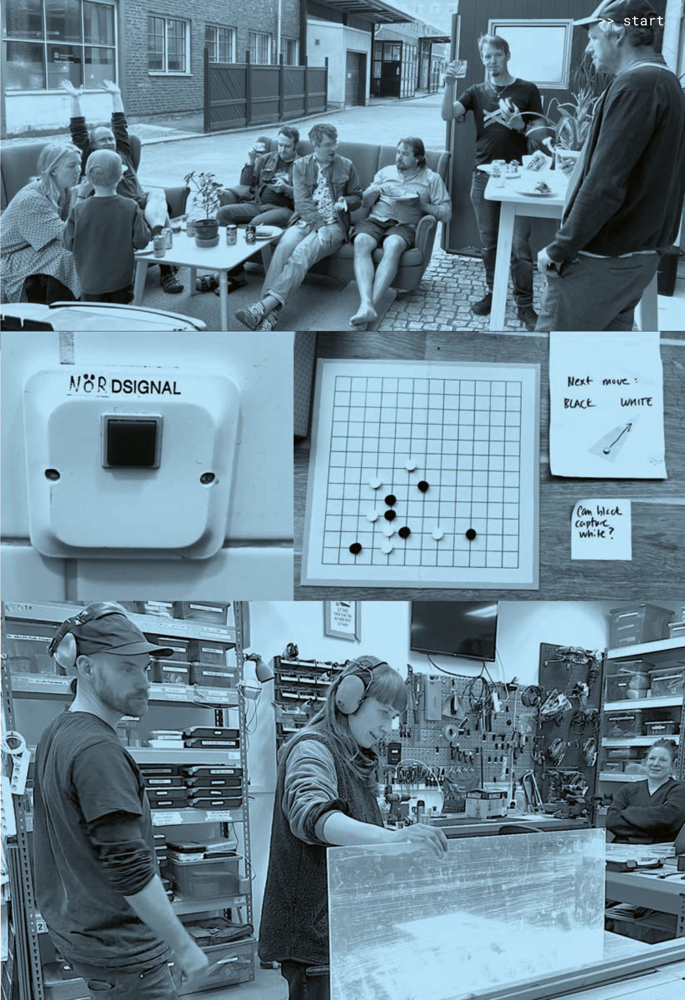
Kittla: Skapa rörelse genom att medvetandegöra & kritiskt utmana befintliga tankesätt
Att skapa nya perspektiv på roller och det egna arbetet
Vi behöver vidga rörelsen kring transformation. Genom att skapa transformations-medvetenhet hos fler, får dessa möjlighet att se det de själva gör i ljuset av samhällstransformation. Det kan öppna ögonen för andra sätt att bidra, vem man skulle kunna kroka arm med, inom vilka andra sammanhang man skulle kunna påverka – till exempel.
Som individer kommer vi med olika drivkrafter, och när det gäller RISE forskare, designers eller projekt- och processledare, så har många sökt sig hit med djup expertis inom något specialområde, med en stark önskan om att göra världen bättre kopplat till sin gärning. Vare sig man utgår från hållbarhet, teknik, människors livsvillkor och hälsa, regioners utveckling, att stärka kultur och bildning eller något annat.
Man kanske inte tänker ”jag bidrar till systemisk transformation”, men man ser sig i hög grad som en del av att göra samhället bättre och redo för framtiden.
Vi tror på att ge språk, perspektiv och verktyg som hjälper fler att se sin plats i det större narrativet, det vill säga se hur allt de gör, är ett av många bidrag till att föra rörelsen framåt.
En ökad medvetenhet kan:
- Skapa nyfikenhet för alla de annorlunda sätt människor jobbar för transformation, vilket kan inspirera till nytänkande
- Skapa meningsfullhet i att se sin gärning i ett större perspektiv.
- Skapa en ny typ av samhörighet med kollegor och andra, som kan ge upphov till nya typer av samarbeten, med kompetenser och erfarenheter man tidigare kanske såg gemensamma nämnare med.
Involvera och katalysera genom ökad medvetenhet
och nytt språk
- Få en att lyfta blicken och se bredare på vägar framåt, när man står inför val om riktning.
- Ge argument för varför det man gör kräver arbetssätt och förhållningssätt som inte alltid är allmänt accepterade. Detta kan handla om att lägga fokus på att förstå människor och system, eller på att omformulera frågeställningar och vara öppen för att ändra riktning och iterera.
Det här gäller både individer och organisationer. Att förändra synsätt kan alltså få stor betydelse för hur vi agerar – inte bara som enskilda personer, utan också på systemnivå. När en hel organisation börjar se sin omvärld på nya sätt kan det skapa rörelse mot helt nya arbetssätt. Exemplet med Polismyndigheten i det här avsnittet visar hur ett förändrat perspektiv har möjliggjort en omfattande omställning i praktiken.
Hjälp att visa på relevans och värde
En viktig poäng handlar om legitimiteten av insatser kring transformation. I olika pågående projekt och initiativ kan det vara svårt att peka på exakt vilket värde som skapas, vilket ofta efterfrågas av dem som tillhör det gamla paradigmet. Vi hoppas att våra olika perspektiv kan hjälpa att visa på värde, genom att placera insatser och arbetssätt i det här större perspektivet.
Exempel från praktiken
Stöd för omvandling inom etisk AI: Från teori till praktik
Kristina Knaving, RISE
Att stödja transformation inom AI med ett etiskt perspektiv innebär att man måste ta till sig både möjligheter och begränsningar, och vara villig att ägna tid år att förstå tekniken. När jag arbetar med människor för att de ska förstå AI på ett kritiskt sätt, betonar jag just detta. Man måste förstå både vad AI kan göra på ett lysande sätt, och var den kämpar eller misslyckas.
AI är en transformerande teknik för att den är lättillgänglig, ofta kapabel och kan agera flexibelt på komplex information - något vi tänker oss är en mänsklig uppgift. Det är också en svår teknik att förhålla sig till eftersom den inte är transparent - man vet inte hur ett beslut tas av en AI. Det går inte heller att skriva tester eller manualer som helt perfekt täcker interaktion med AI, eftersom ingen situation är den andra lik. Istället behöver människor som arbetar med AI kompetens för att kunna göra bedömningar på egen hand - när behöver man dubbelkolla och vilken förståelse och information behöver man för att kunna göra detta?
Min metod för att stödja transformation går längre än att bara ge människor information; jag försöker visa hur man kan tänka. När jag föreläser upplever jag att mitt uppdrag sträcker sig utanför att presentera svar, jag behöver också visa på hur man kan angripa frågor. Jag modellerar detta tänkande med att resonera i realtid och kritisera och kontextualisera mina resonemang.
Jag är inte rädd för att visa att jag inte alltid har perfekta svar. Istället försöker jag demonstrera tillvägagångssätt: ”Jag skulle ta itu med det här genom att...”. Man vill lära andra att ta sig an problem, inte ge polerade, färdigpaketerade lösningar och svar.
Mitt förhållande till AI började genom att experimentera, inte bara genom att läsa. När jag först fick tag på den tidiga GPT-2 (före ChatGPT) var min första instinkt var att testa om den hade bias - jag gjorde experiment för att se om olika verbtyper skulle generera manliga eller kvinnliga karaktärer. Resultaten bekräftade mina misstankar.
Det hela blir en blandning där experimenterande, diskussion, utlärning och påläsning, illustrerar och utmanar varandra. Jag testar fenomen som jag läst om och försöker förklara de fenomen som jag observerar. Genom att experimentera med tekniken och försöka utmana vad den kan göra, bygger jag upp en personlig förståelse till den som abstrakt kunskap inte kan ge.
Transformation är inte något man bara pratar om - det är något man gör. Etik kan inte bara vara teoretisk, man behöver tillämpa den. Man behöver kanske inte ha djupa tekniska kunskaper - jag har inte utvecklat modeller själv - men inte heller kan man tänka att det bara är andras uppgift att förstå begränsningarna med den teknik man använder.
Genom att tillämpa det här arbetssättet, och vara tydlig med att jag själv är på en utvecklingsresa, hoppas jag att jag hjälper andra att utveckla sin egen relation till AI. Det är genom denna praktiska och reflekterande metod jag tror att vi verkligen kan stödja omvandlingen i en värld som blir alltmer AI-influerad.
Metallparadoxen – design för komplex förändring
Lisa Carlgren,Tisha Hupkes, RISE
Metallparadoxen är ett 2-dagars event, utformat som en designsprint och en utbildning i design thinking. Deltagare utifrån olika perspektiv arbetar med komplexitet kopplat till grön omställning, råvaruutvinning och markanvändning.
Den komplexa väven som utgör metallparadoxen rymmer målkonflikter kopplat till exempelvis energiproduktion, konsumtion, urfolksrättigheter, miljöskydd, geopolitik, regional utveckling, turism och arbetstillfällen. Deltagarna får utforska den här komplexiteten med hjälp av ett arbetssätt som handlar om just komplexitet, mänskliga värden och systemsyn.
Den underliggande tanken är normkritisk: gruvbranschen är traditionell med en homogen (manlig) arbetskraft. Gruvnäringens förmåga till transformation och innovation är central för att uppnå mer rättvis och hållbar mineralutvinning. Branschen gagnas av att personer med andra bakgrunder, idéer, arbetssätt och förhållningssätt kommer in - både som yrkesverksamma, och som allmänt engagerade i frågan. Det kan öppna upp för nya typer av samarbeten, nätverk och möjligheter att adressera utmaningar på systemnivå.
Man jobbar utifrån hypotesen att man för att locka en blandad målgrupp, behöver adressera elefanten i rummet – nämligen att gruvindustrin ofta upplevs som gammaldags, smutsig och oetisk. Ja, kanske rentav onödig. Deltagarna har uppskattat att få utforska nyanser i de här svåra frågorna, och vi som faciliterar tycker också att temat hjälper oss att fördjupa vår förståelse och nyfikenhet.
”Vi eftersträvar en fossilfritt samhälle och grön omställning, men ingen vill ha gruvor, vindkraftverk eller kalhyggen.”
Förutom att samlas och engagera sig i en viktig hållbarhetsfråga, får deltagarna lära sig nya arbetssätt att använda vidare sen i sitt arbete. Vi utgår från designmetodik, och mer specifikt design thinking, där vi testar olika verktyg för att kreativt och insiktsfullt jobba med fokus på både individ och system.
En specifik målgrupp är pedagogisk personal på science centers, teknikmuseum runt om i landet. De får inspiration till hur de kan levandegöra frågan på sätt som väcker intresse hos barn och unga, utan att bagatellisera det som kan vara problematiskt. Deltagarna får också ta del av stödmaterial som ger olika perspektiv på ämnet, samt tips och underlag för att själva genomföra kreativa och utforskande övningar i den egna verksamheten.
Eventet är finansierat av Vinnova genom Swedish Mining Innovation, och faciliterat av forskare / design thinking specialister från RISE Research Institutes of Sweden.
Polisen: Att tänka om kring sitt uppdrag – när verkligheten förändras
Erik Bakkman, RISE (fd Polismästare NOA)
När Polismyndigheten insåg att brottsligheten de stod inför inte längre kunde mötas med traditionella lösningar, växte behovet av att tänka om. En förändrad omvärld med ökande komplexitet, snabbrörlighet och antagonistiska aktörer, ställde nya krav på myndighetens sätt att förstå sitt uppdrag.
Tillsammans med forskare på RISE påbörjades en förflyttning mot att se samhället som ett adaptivt och komplext system – där orsaker och effekter är sammanflätade, och där lösningar kräver samverkan snarare än kontroll. Transformationsteorin blev ett viktigt verktyg för att sätta ord på det skifte som redan pågick inom myndigheten.
I stället för att organisera utifrån fasta roller och linjära processer, började man arbeta med problemanpassade förmågor. Från en uppfattning om brott som avgränsade händelser med tydliga lösningar, till ett synsätt där brottslighet förstås som ett systemiskt fenomen – där olika verksamheter behöver agera tillsammans, utifrån gemensamma målval och delad information.
I samarbetet med RISE har Polismyndigheten utvecklat sin strategiska analysförmåga, byggt framsyn kring framtida scenarier och fördjupat sin innovationsledning på flera nivåer. Polismyndigheten har fått stöd i att leda i komplexitet, och forskningsprojekt har fördjupat förståelsen för hur samverkan mellan myndigheter kan organiseras när brottsligheten rör sig över organisatoriska och geografiska gränser.
Det som vuxit fram kan beskrivas som ett slags brottsbekämpande innovationssystem – ett arbetssätt där teknologi, mänskliga förmågor, struktur och riktning samverkar för att hantera det oväntade. Tydliga resultat syns i form av minskat antal skjutningar, ökad uppklarning och stärkt operativ förmåga.
Men transformationen handlar inte bara om resultat. Den innebär också att Polismyndigheten har omprövat sin roll i samhället, i takt med att verkligheten förändrats. Det är ett exempel på vad som blir möjligt när stora myndigheter tillåts tänka nytt – och får stöd att göra det tillsammans med andra.

Att undersöka kritiska, osynliga faktorer visuellt
Vi vill dröja oss kvar vid illustrationen på föregående sida, och vid styrkan i att jobba visuellt och rumsligt.
Att locka fram det som är otydligt eller outtalat i ljuset, främjar kritisk och nödvändig dialog. Ett sätt är att lyfta fram olika dimensioner, som illustreras som olika skalor där deltagare får positionera sig. Att se på spridningen öppnar sedan upp för diskussioner om likheter, olikheter, kring det man tagit ställning till.
Till exempel: Hur ser vi på de mål vi har satt upp i vår transformationsresa - är de mer eller mindre föränderliga eller absoluta? Då kan vi diskutera var vi befinner vi oss, hur långt vill vi gå, hur vill vi leda på det, och hur vi vill gå vidare. Eller hur står det till med mer grundläggande värderingar, behöver vi belysa våra olika världsbilder?
Vi kallar en sådan här övning för ett “DJ mixerboard”, där man kan tänka sig små spakar som man kan dra åt olika hall. Det kan vara på papper, whiteboard, eller i verktyg som Mural om vi jobbar online.
Vi använder också rummet och våra kroppar i något vi kallar “repövning”. Hela rummet blir till en skala där vi drar upp tänkta linjer längs vilka deltagare ställer sig beroende på deras svar på frågorna som ställs. Då blir det väldigt tydligt var i rummet svaren koncentreras. Varför någon har placerat sig som en outlier? Varför står alla står och trängs vid en viss punkt? Hur tolkar man de olika ändpunkterna?
Det här visuella arbetssättet - eller att känna någon form av osäkert ställningstagandet i kroppen när man tar riktiga kliv och trängs - levandegör reflektioner på ett sätt som når djupare. Man tvingas ta ställning. Men man kan också ändra sig och flytta position allt eftersom nyanser och perspektiv växer fram, så det blir också ett sätt att förhandla och förankra gemensamma mål och tankefigurer.
Om förståelsen för var i förflyttningen (på mixerbordet) organisationen befinner sig är olik eller varierar mycket, så betyder det att förmågan till strategisk ledning av transformationen behöver stärkas. Det är alltså ett bra lägesbildsverktyg för inriktning och prioritering av verksamheten, såväl som ett verktyg för utveckling av ledningsgruppen i en transformationsprocess.
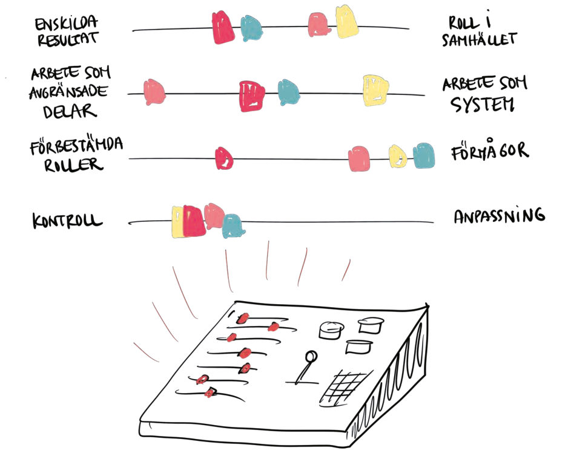
Agera trädgårdsmästare: facilitera övergången
Att agera trädgårdsmästare
Som boken har visat så använder vi gärna trädgården och organiska referenser som metaforer för transformation. Trädgården blir en plats där frön och plantor gror, annat vissnar och komposteras, okända växter kommer fram. Vi kan tala om lågt hängande frukter och sådant som är svårare att få fatt i. Vi kan tala om förutsättningar att få något att växa, intrikata ekosystem, eller försurning och näringsbrist.
Som vi nämnde i kapitel 3, står trädgårdsmästarens perspektiv för den som har överblick och ytterst tar hand om trädgården, den som har en förståelse för vad man vill skapa.
Där ryms den övergripande förståelsen för vilket utvecklingsstadium vi befinner oss i, vad som är det nya och vad som är det gamla, och för transformationsprocesser i sig. Vilka växter behöver dö, och vilka vill vi ersätta dem med? Och hur kan vi kompostera de gamla växterna så att de kan ge näring åt det nya som växer fram?
Att agera trädgårdsmästare innebär att stötta och motivera genom att:
- Hålla blicken på de större perspektiven.
- Upprätta riktningen och vart vi vill
- Utforska och forma det nya
- Medvetet demontera och dekonstruera det som inte fungerar
En erfaren trädgårdsmästare förstår att transformation tar tid och att gamla strukturer kan vara essentiella innan det nya finns på plats – även om de senare kommer att ha spelat ut sin roll.
Vad innebär det i praktiken? Att facilitera transformation handlar om att kunna tänka, förstå och verka på flera systemnivåer, och att välja rätt nivå i varje aktuell situation. Det handlar också om att skapa en tillåtande kultur, psykologisk trygghet, acceptans för misstag, etablerande av möjliggörande normer och så vidare.
När vi agerar trädgårdsmästare så gör vi det genom olika roller, exempelvis som processledare, coach, rådgivare eller inspiratör. Det kan vara knutet till en organisation, men oftare i olika samverkanssammanhang. En del av oss är forskare eller designers, och aktiviteter och insatser som görs kan vara del av aktionsforskningsprojekt. Det är en process för att bygga kunskap som innebär att akademiker och praktiker gemensamt utforskar ett område på lika villkor, med syfte att skapa positiv förändring.
Det här avsnittet går in på roller, metoder, vad erfarna faciliterare kan bidra med, och hur vi jobbar kreativt inspirerat av design och konst, illustrerat med exempel.
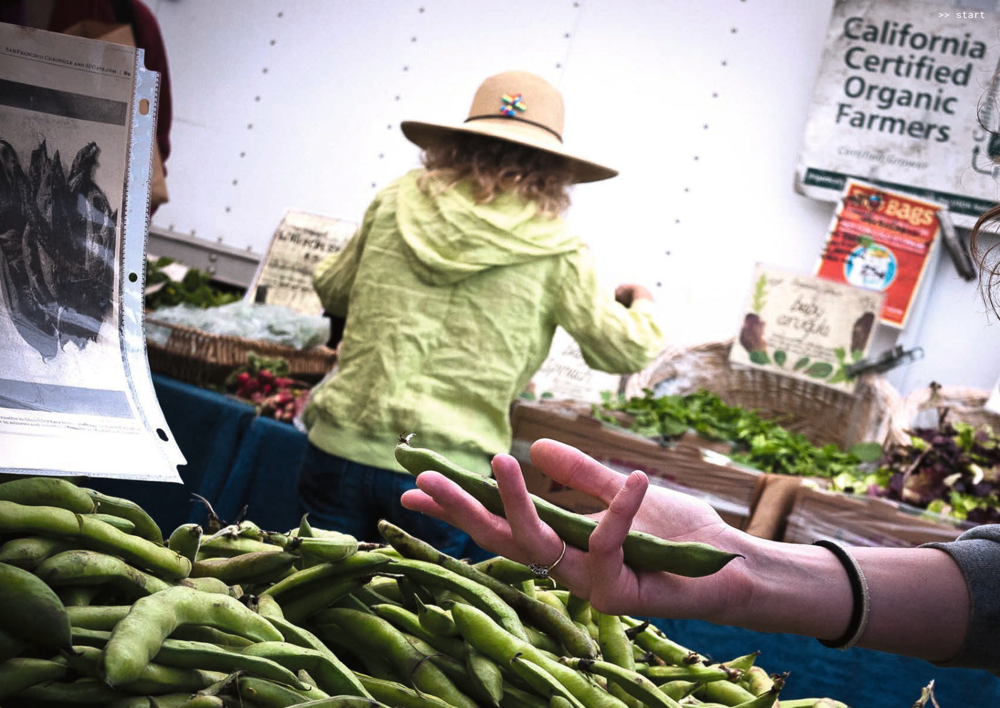
Bilden rymmer flera metaforer – kan du se dem? Trädgårdsmästaren som kan förhålla sig till säsonger, går in i och ut ur olika roller efter behov, som övertygar med berättelser och visioner, som engagerar och förmedlar värdet av det nya som kan uppstå. Kan du tänka dig fler roller kopplade till trädgårdsmästarens roll i transformation?
När etablerade organisationer sitter fast i strukturer och affärsmodeller som inte längre fyller sin funktion brukar individer med ett annat perspektiv och en annan drivkraft att gå sin egen väg för att katalysera transformation.
Vi har träffat flera sådana individer som navigerar genom att delta i olika forum, forskningsprojekt och initiativ – de hittar helt enkelt möjlighetsfickor där de utforskar vägar framåt för kunskapsutveckling, men också för att se om de kan påverka sina organisationer inifrån (i det fall de bedömer att organisationen ändå kan spela en roll i det större transformationsperspektivet).
Det vi har sett i projekt som syftar till samlärande mellan organisationer (eller individer i organisationer) – är att det är oerhört viktigt att få med rätt människor. Sådana med relevant kunskap, nätverk och med rätt erfarenhet för utmaningarna man står inför. Men också de med rätt personlighet för att både kunna vara drivna och sårbara i mötet med andra som driver transformation.
En pionjär kanske har identifierat en organisation som den ultimata parten att slå ihop sig med för att ta nästa steg, men så visar det sig att kunskapsnivån, erfarenheterna, personkemin eller drivet är fel. På pappret kan en strategi verka bra, men i praktiken blir det något helt annat på grund av vem som är inblandad.
Särskilt när det gäller samverkansprojekt krävs att den som faciliterar är medveten om detta, och att den personen har en lyhördhet och förmåga att navigera förändringar och gruppdynamik när gruppsammansättningar inte matchar ändamålen.
>> Start
Identifiera och koppla ihop pionjärer med möjliggörare
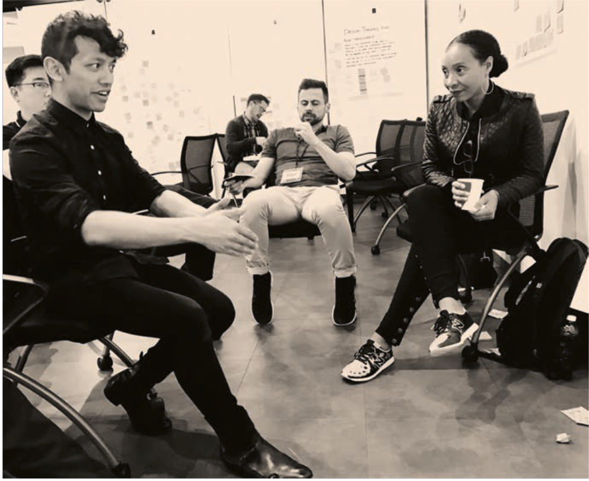
Faciliterande roller
I transformationsprocesser uppstår nya roller som behövs för att möjliggöra förändring. Hur detta kan ske beskrivs i nästföljande exempel.
Processledare och coach
Rollen handlar om att stötta exempevis kommuner och företag som vill förstå mer om och navigera transformation. Den innebär att processleda, inspirera, kanske provocera, coacha eller skapa ramverk.
Det kan handla om att utveckla sätt att jobba strategiskt för och med transformation. Det kan innebära att skapa och testa alternativa strukturer eller utforska nya typer av utvärderingskriterier. Att finna nya eller omdefinierade roller och att jobba aktivt med normförflyttning. I projekt med flera parter fokuserar vi ofta på relationsbyggande, samlärande och gemensamt utforskande.
Ofta har den här typen av roll mycket gemensamt med andra bitar vi tar upp i kapitlet. En processledare kan jobba utbildande, leda arbetet med att testa nya teknologier eller med att kritiskt utmana idéer och förhållningssätt, och kanske är framtidsprototyper och spekulativ design en del av faciliteringsarbetet.
Social trädgårdsmästare
Ett genomgående tema i boken handlar om nätverk och sammanhang. Vi behöver att människor går samman för att lära och utforska, för att skapa, dela erfarenheter och få tröst.
En social trädgårdsmästare spelar en central roll i att bygga förtroende, skapa nya kopplingar och relationer samt facilitera samtal.
Dessa samtal samlar människor kring frågor som kräver systemförändring, inom sådant som ökad ensamhet, psykisk ohälsa eller hållbar livsmedelsproduktion. Sådana komplexa utmaningar kräver engagemang från många olika aktörer, ofta med varierande bakgrunder, agendor och perspektiv.
Därför är det avgörande att skapa möjligheter för dessa aktörer att lära känna varandra, bygga tillit och stärka den sociala väven mellan sig. Samtidigt innebär transformationsarbete att hantera spänningar och konflikter. Här blir den sociala trädgårdsmästaren en viktig roll – den som vårdar och odlar den gemensamma omsorgen.
Neutral facilitator
Det är en roll som till viss del överlappar med den sociala trädgårdsmästaren och ibland även med coach eller processledare. En transformationsfacilitator stöttar samskapandet mellan dem som tillsammans vill driva systemförändring. Det kan exempelvis handla om aktörer i en industriell sektor som behöver hitta nya roller, ansvar och affärer i nya typer av ekosystem. Då kan själva förändringen vara känslig på grund av företagsrelationer, olika affärslogiker, förutsättningar och kunskapsnivå.
Då är det viktigt med en neutral aktör utan egen agenda som kan skapa trygga rum för utforskande, sårbarhet, medkänsla och dialog, där grupper kan ta sig igenom spänningar och konflikter och våga vara öppna med utmaningar och osäkerheter.
Det handlar om att utmana och skapa konstruktiv friktion, så at grupper inte blir alltför bekväma. Genom att väva samman olika perspektiv, stimulera kreativitet och omvandla samtal till handling, kan en facilitator bidra till att driva processen framåt i linje med det gemensamma syftet.
Exempel från praktiken
Neutral empatisk facilitering för att skapa tillit mellan nya aktörer
Sara Fallahi, Lisa Carlgren, Derek Diener, RISE Mattias Axelsson, HHS
Projektet Prototypa Digitala Cirkulära Affärsekosystem (PDCA) fokuserade på den tidiga embryofasen av cirkulär transformation inom samhällsbyggnadsbranschen.
Trots den enorma potentialen att minska klimatpåverkan (branschen står för 37% av CO2-utsläpp globalt) så finns få nödvändiga bitar på plats kring policy, roller, logistik, teknikutveckling, branschstandarder eller kundbeteenden. Trots att de flesta stora aktörer har ambitiösa visioner (där de ofta ser sin egen framtida roll som central i en framtida cirkulär ekonomi) så händer väldigt lite och utvecklingen drivs till stor del av pionjärer och fritänkare som krokar arm och försöker hitta möjligheter. Men vem ska man lära ihop med och hur?
Inom forskningen pratar man ofta om rollen som ekosystemledare eller orkestrator – en roll som passar den dominerande parten med rätt styrka och förmåga att samordna de olika aktörernas incitament. Det är en roll som ofta ses som attraktiv och något som olika partners kan tävla om.
I PDCA såg vi att detta inte kan gälla i situationer där partners behöver bygga en atmosfär för samlärande och relationsbyggande – vilket var nödvändigt i den här tidiga fasen. I stället behövs en neutral faciliterande part för att skapa och vårda den bas av tillit som krävs för att deltagare ska kunna vara transparenta i sitt utforskande av roller, ansvar och hur de kan bidra även om de inte kan lägga så mycket resurser.
När de kan vara öppna om sina svagheter, osäkerheter, möjligheter och idéer så uppstår ett klimat som gynnar engagemang och kreativitet. När de vågar exponera det motstånd de möter i sina organisationer, ökar viljan att genuint stötta och inspirera varandra och hitta pragmatiska och okonventionella vägar framåt. De går från att bevaka revir till att ta gemensamt ansvar för ett större syfte.
Studien visade att det är centralt hur processen faciliteras i en orkestrering av ekosystem:
- Neutralitet. Det är viktigt att den faciliterande parten är neutral – utan egen agenda – för att navigera den komplexitet som uppstår i nya aktörskonstellationer i en otydlig kontext. Man behöver kunna ställa kritiska frågor och hantera de spänningar som ofrånkomligen uppstår.
- Fokus på engagemang genom empati och emergens. Processen är bräcklig, och för att överleva så behöver deltagarna bibehålla engagemang över tid och processen måste ta hänsyn till behov och nya engagemangshöjande idéer som dyker upp.
- Kreativt lärande med högt i tak. Processledarna behöver stödja deltagarna genom att skapa utrymme för reflektion, se nya perspektiv, skapa ett gemensamt språk, tänka utanför boxen kring hur man skapar lärandemöjligheter och formulera dessa insikter så att de inte går förlorade. Lärandet i detta projekt var som högst när man tangerade den friktion som finns, på ett hälsosamt sätt – varsamt, provokativt, roligt, lättsamt och allvarligt.
- Ett tvärdisciplinärt faciliterarteam säkerställde här en kombination av nödvändiga kompetenser. Expertis inom respektive domän (cirkulär transformation, innovation av affärsmodeller och innovationsledning) skapade legitimitet och framdrift. Lång erfarenhet av designfacilitering med fokus på emergens, empati, mönsterigenkänning och kreativitet. Ett arbetssätt med utrymme för kontinuerlig gemensam reflektion och emergens, stöttade processen.
Vinnova-finansierat forskningsprojekt med RISE och tre industriparter
Hur utforskar vi transformation genom exnovation?
Men hur kan vi utforska exnovation? Och hur kan insikter spridas, för att bidra till exnovation också i andra sammanhang? I de här projekten utforskar vi, genom att kombinera teori med empiriska studier i fält. Eftersom exnovation behöver ske hos olika aktörer i konsumtionssystemet inkluderar vi tre olika aktörer: beslutsfattare, företag och konsumenter. I ett av projekten börjar vi med fokusgrupper där aktörerna får dela sin bild av vilka inlåsningar och hinder som måste tas bort. De får också ge inspel till en tillräcklighetsorienterad framtidsvision. Sedan får aktörerna experimentera med exnovation i sin vardag och reflektera över vad som händer. Under experimenterandet träffas alla aktörsgrupper två gånger för gemensamt lärande. Utifrån deras upplevelser skapas berättelser om exnovationsresor som tillsammans med exempel på exnovation och framtidsvisioner kan spridas för att inspirera fler till exnovation.
Sara Renström,RISE Anneli Selvefors,RISE
Utveckling av nya mer resurssnåla innovationer lyfts ofta fram som vägen till ett hållbarare samhälle. Men tänk om lösningen i själva verket handlar om att ta bort, snarare än att uppfinna något nytt? Exnovation – borttagande av något befintligt – kan användas för att adressera dagens fossilberoende tekniker och produkter, men också praktiker, strukturer och styrmedel som låser in oss i ohållbara konsumtionsmönster och en linjär ekonomi. I omställningsforskning har vikten av exnovation lyfts fram, men det är än så länge mindre utforskat än innovation. I två projekt på RISE undersöker vi tillsammans med projektpartners därför hur exnovation kan bidra till ett ”tillräcklighetsorienterat” samhälle – ett samhälle där vi strävar mot ett gott liv inom planetens gränser.

På RISE genomförs under åren 2024-2028 två projekt om exnovation för tillräcklighet:
Exnovation för tillräcklighet: Utforskande av vägar till framtida konsumtion med låg klimatpåverkan är finansierat av Formas inom det nationella forskningsprogrammet om klimat och genomförs med Kungliga Tekniska högskolan.
Exnovation for sufficiency: exploring pathways to an exnovation mindset and sufficiency futures är finansierat inom ”Mistra utmana” och genomförs med Internationella miljöinstitutet vid Lunds universitet och Chalmers tekniska högskola.
Tidiga steg i en faciliterad transformationsresa
När vi går in och faciliterar tidiga förändringsresor så är följande ett typiskt mönster – välkända steg, men de är värda att upprepa eftersom de ofta glöms bort – framför allt det som handlar om system.
Fokusera på syfte – varför: Syftet är så avgörande att det nästan blivit en klyscha – men varför vill ni egentligen åstadkomma något? Vilket högre syfte strävar ni mot, och varför? Vad är meningsfullt för dem som aktivt är involverade i förändringen? Har ni samma vision, och om inte, vad innebär det för ert arbete? Hur väl linjerar ert syfte med dem som påverkas av förändringen? Det går att gissa, men det är också viktigt att faktiskt ta reda på det.
Systemkartläggning. Kartlägg viktiga element i systemet. Om du kartlägger en ”abstrakt” aktör (som till exempel en myndighet), vilka är de personer du sannolikt kommer att interagera med? Vem har handlingsutrymme, vem kan möjliggöra och vem kan skapa motstånd? Vilka är de informella ledarna?
Lära känna kontexten. Förstå de olika behov som finns i systemet, och vilka faktorer som kan påverka. Vem kan hjälpa till att förstå detta? Interagera med människor – informella ledare, interna bråkmakare eller upplysta medlemmar av ledningsgruppen kan vara till stor hjälp.
Hitta de första möjlighetsfickorna. Använd insikterna från dessa kartläggningar för att hitta inledande möjlighetsfickor. Vilka kan vara hävstångspunkter? Var kan du hitta energi eller engagemang? Finns det någonstans du kan prova något i liten skala? Behöver du kanske först göra ett förberedande arbete, som att få chefer att förstå och köpa in på förändringen?
Upplevelsebaserat utforskande. Vi använder ofta interaktiva, förkroppsligade metoder och metaforer eller ramverk som främjar fritt tänkande, kreativt ifrågasättande, reflektion och dialog. Några av dessa beskrivs i efterföljande exempel.
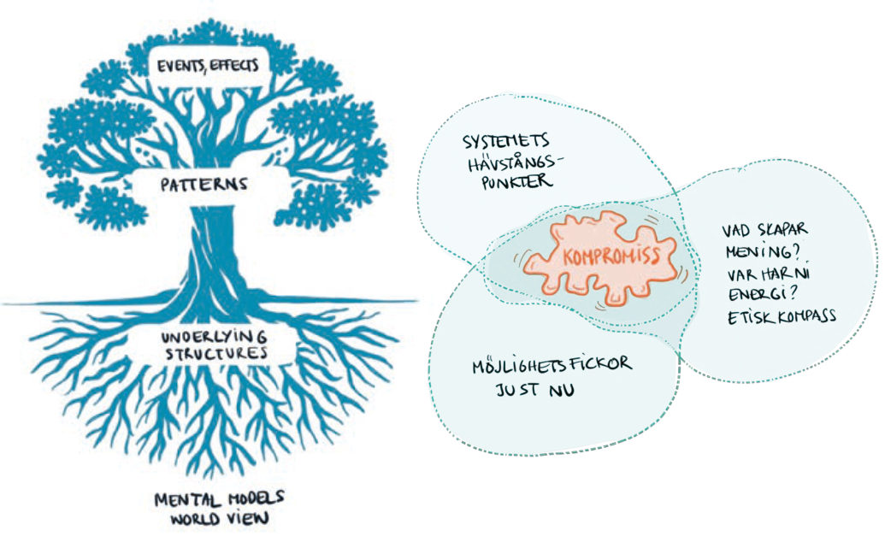
Designfacilitering
Designfacilitering – förhållningssätt och verktygslåda
När vi jobbar med komplexa sammanhang, framväxande processer och möjliga framtider, använder vi ofta våra förhållningssätt och en verktygslåda från design.
Det kan handla om att vägleda deltagare till att utforska nya sätt att närma sig problem, att arbeta kreativt med idéer och spekulativa framtider. Det kan också handla om att jobba med dialogprocesser inspirerat av design och konstnärliga designpraktiker. Exempel på hur man kan jobba med design och konst gavs i introduktionsdelen till det här kapitlet.
Designfaciltiering kan bidra med:
- Effektivt stöd till samarbetsprocesser genom att integrera och utforska olika perspektiv, även när dessa är motstridiga.
- Genom att fokusera på både människor och system, och genom att kontinuerligt omformulera problem och situationer, främjas en djupare förståelse för den komplexitet som systemtransformation bär på.
- Praktiker som snabb prototypframtagning och korta iterativa utvecklingscykler stödjer lärande och hypotesdrivet arbete.
- Visualisering och estetiska upplevelser hjälper till att förstå mönster, utveckla och konkretisera idéer, samt att kommunicera effektivt mellan olika discipliner.
- Designfacilitering främjar dialog och lekfullhet, vilket skapar ett tryggt klimat för innovation och samarbete.
Erfaren designfacilitering i längre utforskande processer
I flera projekt faciliterar vi processer som sträcker sig över längre tid, där relationer, gruppdynamik och visioner framträder och utvecklas längs vägen. Facilitators roll består då av att vara en närvarande observatör, möjliggörare och medskapare i processen.
I en längre samarbetsprocess så handlar designfacilitering om att låta en process vara öppen och kunna ändra riktning. Planering av aktiviteter bjuder in till samskapande och tar höjd för oväntade vändningar och nya vägar. Planer omformas när tidigare intentioner och verktyg möter verkligheten i workshops, eller när nya problem, behov och möjligheter uppstår.
Men tanke på allt detta är facilitatorernas relationella känslighet när de interagerar med deltagare enormt viktig i designfacilitering. Det handlar om förmågan att uppfatta, agera på och reflektera över subtila och komplexa samarbetsmönster eller händelser som uppstår.
Ju djupare erfarenhet (och därmed trygghet) en facilitator har, desto lättare har den att improvisera och plocka fram metoder och aktiviteter ur bakfickan i stunden, eller att reflektera över och utveckla vad som kan behövas i nästa steg.
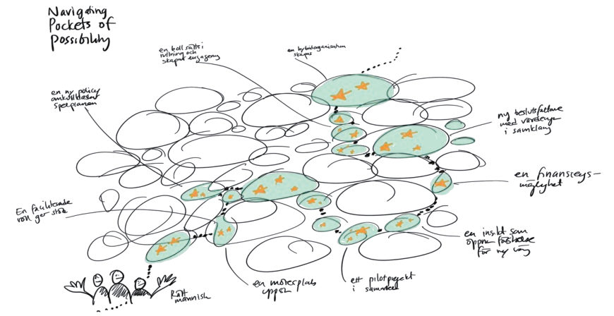
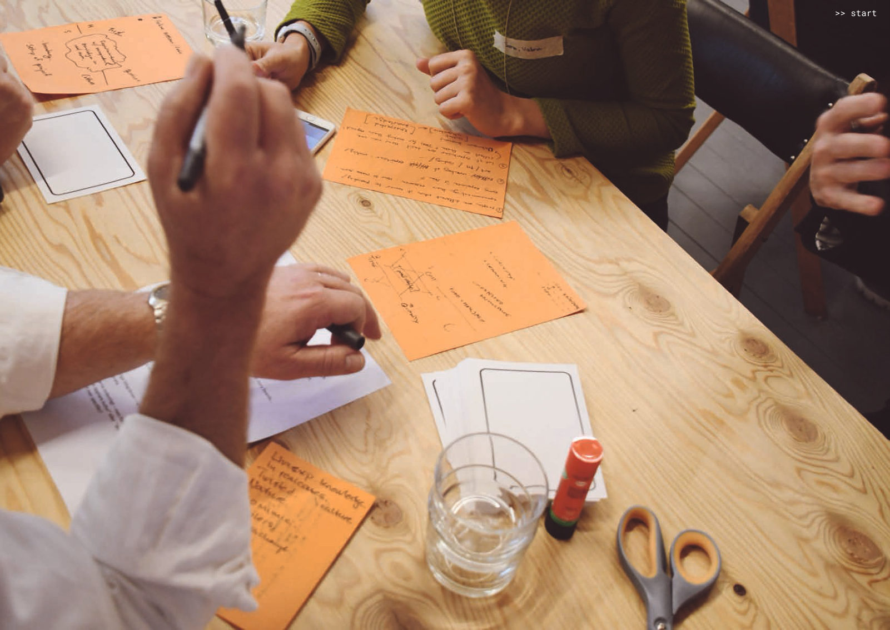
Relationell känslighet och uppmärksamhet
Deltagande designprocesser, där flera aktörer tillsammans skapar önskade förändringar, är i grunden relationella och föränderliga. I dessa processer uppstår behov kontinuerligt och arbetet omformas ständigt av alla inblandade. Snarare än att förlita sig på fasta planer behöver den som leder och faciliterar sådana processer, utveckla en känslighet för relationerna och vara beredd på allt som kan tänkas uppstå i dessa dynamiska samarbeten. Man behöver en särskild beredskap och förberedelse som grundar sig i hela ens person, där ens bakgrund, kultur, personlighet och engagemang på ett grundläggande sätt formar arbetssätt och faciliteringsmetoder.
Relationell känslighet och uppmärksamhet (relational sensibility) är ett begrepp som beskriver denna beredskap. Det handlar om att uppfatta osynliga, subtila och komplexa samarbetsmönster samtidigt som man reflekterar över hur dessa formas av vår uppväxt, vår kultur ochvårt samhälle. Denna känslighet tar sig uttryck som en förkroppsligad kunskap som uppfattar och besvarar de mellanmänskliga nyanserna i en grupp. Genom att vara närvarande i och lyhörd för relationerna, förbättrar facilitatorn både sin responsförmåga i situationer och sin kapacitet att leda ansvarsfulla designprocesser med deltagare.
I-We-It-modellen från utvecklingspsykologin fördjupar förståelsen av relationell känslighet och ger stöd för vad man kan uppmärksamma i dynamiken kring samarbete, genom tre sammanlänkade perspektiv:
I: Individuella dimensionen som fokuserar på personliga intressen, känslor, tankesätt, perspektiv och förutfattade meningar som praktiker och deltagare tar med sig in i processen.
We: Den kulturella dimensionen som handlar om de underliggande värderingar och gruppnormer som formar samarbetets dynamik.
It: Process- eller systemdimensionen som omfattar de process- och rumsmässiga element som skapar struktur för samarbetet.
Genom att använda modellen kan både facilitatorer och deltagare i designprocesser uppmärksamma olika dimensioner av det gemensamma arbetet. Insikten blir tydlig om att transformativa processer sker samtidigt på flera nivåer – vissa mer synliga än andra. Modellen integrerar olika förändringslogiker, från individuella tankesätt och kompetenser – till kulturella och processuella dimensioner.
Denna modell utvecklades i relation till deltagande design i Laura Gottliebs doktorsarbete (2023; 2024). Den har använts i förändringsprocesser med team från offentliga organisationer, där förändring hanteras utifrån I, We, It-perspektiven. Modellen har integrerats både i processdesign och -facilitering och har hjälpt deltagare att reflektera över deras egen situation och förändring ur flera perspektiv.
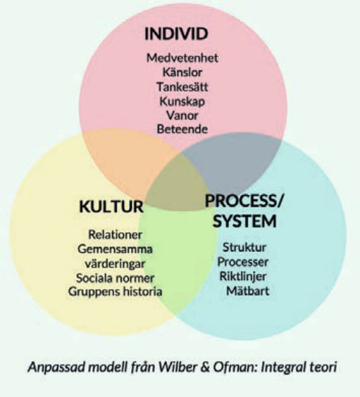
Design for transforming practices (DTP) – eller ”design för transformerande praktiker” – är ett arbetssätt som syftar till att skapa samhällen som är hållbara – socialt, miljömässigt och ekonomiskt. DTP stöttar multiaktörsteam kopplade till en geografisk plats i att utforska och utveckla nya sätt att jobba med svåra samhällsutmaningar. Arbetssättet har utvecklats av forskare och designers från RISE Prototypande Samhälle, Eindhoven University of Technology och Umeå universitet.
DTP handlar kortfattat om att i sektoröverskridande samverkansprogram baserade på deltagande processer, ta fram lokala lösningar samtidigt som man tänker på hur allt hänger ihop i större system. Centralt är mångfald av perspektiv, tillit och designprinciper.
Tre dimensioner av förändring lyfts fram:
- Att inse förändring (realise change) handlar om att förstå vad som krävs för att skapa mer än bara ett förslag – det handlar om att skapa hela landskap av designförslag som skapar förutsättningar för människor att förändras.
- Att arbeta med förändring (work change) handlar om hur man jobbar för att möjliggöra transformation. Det innebär att ett utvecklingsteam lär sig mer om hur transformation fungerar och använder design och forskningsaktiviteter för att ta fram förslag som kan göra skillnad.
- Att vara förändring (be change) handlar om att förkroppsliga transformation – att känna förändringen, leva med den och visa den i sitt sätt att vara. Det gäller både dem vi designar för – att ge dem möjligheten att förändras – och oss som jobbar i teamet. Att själva bli en del av den förändring vi vill se och leva de värderingar som den vilar på.
Design for transforming practices: plats, lärande
och metoder
Design for transforming practices bygger på tre grundpelare:
1 Platsen – den lokala kontexten. Vi utgår alltid från en specifik plats – en fysisk och social kontext med unika kulturella, ekonomiska och geografiska förutsättningar. Genom design faciliterar vi möten där människor kan bidra med sina perspektiv, lära av varandra och skapa gemensamma prototyper för möjliga framtider. Det konkreta görandet skapar utrymme för reflektion, dialog och handling.
2 Livslångt lärande och kompetensutveckling. Genom gemensamma, reflekterande praktiker utvecklar deltagarna sin förmåga att navigera komplexitet och bidra till förändring från sina respektive roller. Dessa aktiviteter skapar och underhåller lärandeekosystem där kunskap växer genom erfarenhet, samverkan och kritisk reflektion.
3 Metoder och verktyg för samverkan och transformation. Vi utvecklar och delar verktyg som stödjer det gemensamma lärandet och samskapandet. Metoderna är i ständig utveckling och anpassas för att underlätta samarbete över sektorsgränser – bortom stuprör – och bygga långsiktiga partnerskap för transformation.
Projektet Station of Being på nästa sida är ett exempel på hur DTP kan göras i praktiken. Det beskrivs också med mer detalj i Trotto (2023), Forms that transform practices.
Exempel från praktiken
The Station of Being – design som drivkraft för transformation i Umeå
Ambra Trotto, EIT Culture & Creativity
Projektet The Station of Being är ett exempel på hur design kan användas för att möjliggöra systemtransformation i praktiken. Under två år samarbetade RISE designforskare med en mängd lokala aktörer i Umeå för att utveckla en ny typ av busshållplats – inte bara som fysisk infrastruktur, utan som katalysator för nya sätt att förstå och gestalta offentlig miljö, mobilitet och hållbarhet i arktiska städer.
Umeå, med sitt kalla klimat och höga hållbarhetsambitioner, deltog i EU-projektet RUGGEDISED, där staden skulle ta fram en prototyp för en "smart" busshållplats. Kommunens uppdrag var från början tekniskt: minska CO2-utsläpp och förbättra energieffektivitet. Men bakom de tekniska kraven fanns också värden som jämställdhet, inkludering och tillgänglighet – grundpelare i Umeås stadsutveckling.
RISE arbetade med uppdraget genom designmetodiken Designing for Transforming Practices (DTP). Tillsammans med designingenjörer, studenter, kommunen och andra lokala aktörer utvecklades frågorna: Vad innebär en meningsfull väntan? Hur kan en hållplats bjuda in till närvaro, trygghet och inkludering?
Användarstudier, prototyper, rollspel och fullskaliga modeller användes för att förstå beteenden och utmana antaganden. En central insikt var behovet av att minska osäkerheten i mötet mellan passagerare och busschaufförer. Ljud- och ljusdesign blev nyckelkomponenter där olika färger och ljud signalerar vilken buss som kommer, vilket minskar stress och onödiga stopp. Utvecklingen av hängande kokonger gav former som samtidigt skyddar mot vinden, ger möjlighet till avskildhet eller gemenskap, och skapar trygghet i det öppna rummet.
Under hela processen låg fokus på deltagande, kommunikation och gemensamt lärande. Invånare och intressenter bjöds in till utställningar och testmoment där reflektion och dialog kring stadsutveckling, inkludering och transformation stod i centrum. Projektet blev därmed inte bara en ny hållplats – utan en ny förståelse för vad en smart, hållbar och mänsklig stad kan vara.
Projektet The Station of Being bidrog till förändring på flera nivåer: i individers personliga och professionella förhållningssätt till samhällsomställning, i kommunens upphandlingspraxis och administrativa rutiner samt i samspelet mellan RISE och lokala aktörer. Prototypen – den nya busshållplatsen – ökade trygghetskänslan, särskilt bland kvinnor, och visade hur medborgare kan bli mer aktiva i stadsutveckling. Projektet har också påverkat hur smarta städer kan förstås, utvecklas och forskas om – och därmed bidragit till en ny praktik för samhällsbyggande.

Att använda design thinking för att facilitera transformation och bygga förmågor
Vi möter många som är nyfikna på design thinking. Flera av oss utbildar i metodiken som ett stöd för att bygga transformations-förmåga, och många använder orden för att beskriva vad vi gör i våra projekt.
Under de senaste ca 20 åren har begreppet design thinking (DT) vuxit fram inom managementfältet, paketerat som en uppsättning användarcentrerade och kreativa metoder och tankesätt. DT beskrivs ofta som en process för att utforska problem och lösningar, främst riktad mot icke-designers som vill lära sig att tillämpa designmetoder. Flera kärnelement inom design återkommer i design thinking som har ett specifikt fokus på användare, utforskande genom snabb prototypframtagning i korta iterativa cykler, inkluderande samarbete, mångfald och multidisciplinäritet. Närliggande begrepp är tjänstedesign, co-design, eller människocentrerad design.
Lisa Carlgren, en av författarna till boken, gör en reflektion kring hur vi använder design thinking när vi agerar trädgårdsmästare:
Jag har forskat om vad som händer när man försöker implementera design thinking (DT) i organisationer sedan snart 15 år. Vi har skapat pedagogiska modeller som ger språk att hantera den mängd olika sätt som DT används och tolkas på, och den friktion som kan uppstå när användning av DT krockar med traditionella, linjära värderingar. Just de här värderingskrockarna är värdefulla att förstå eftersom de har en tät koppling till friktion man stöter på när man faciliterar transformation i samarbete med människor inom olika organisationer.
Med tiden har jag utvecklat en slags hatkärlek till begreppet. Kärlek, eftersom jag sett de olika typer av (ofta oväntade) värden som kan uppstå – mycket kopplat till individuell utveckling och kulturell förändring, bort från de traditionella tankesätt som vi lyfter fram här som bromsklossar i transformation. Men jag känner även en misstro, kopplat till hajp och förenkling, och en övertro på verktyg istället för på de människor som använder DT. Jag ser risken att man bortser från vikten av erfarenhet och förmåga när man tror att en kort kurs gör att folk ”kan” DT, istället för att respektera den djupa erfarenhet som krävs.
Jag känner något slags ansvar för hur jag förmedlar och undervisar om design DT, där jag vill bygga in de här kritiska perspektiven och skapa förutsättningar för de faktiska fördelar att komma fram. DT kritiseras ibland för att vara alltför fokuserat på människor på bekostnad av hållbarhets- och systemaspekter. Här tänker jag att med en pragmatisk inställning plockar man vad man behöver, utan att fundera på vad något kallas, eller vad man ”får och inte får” göra.
När jag faciliterar processer talar jag inte alltid om DT, men jag använder mig liberalt av verktyg som man stöter på inom DT – och hittar oftast även på egna. Jag ser det inte som att det måste vara på ett visst sätt. Däremot blir många hjälpta av en riktigt tydlig double diamond-process med väl definierade steg, verktyg som har namn och går att skriva ut som mallar och strikt time-boxing.
När DT skälls ut för att vara förenklat tänker jag snarare att det kan vara en tillgång när man vill skapa bryggor. I allt som är osäkert kan det vara riktigt skönt med en rejäl ledstång och handfast, empatisk facilitering. Det är lite som Bohrs atommodell.
När vi använder designmetodik, lek eller konstnärliga ansatser på olika sätt i våra forsknings- och utvecklingsprojekt, hamnar vi ofta i ett dilemma:
Hur gör vi så att design inte känns för ”konstigt” (eller teoretiskt och svårbegripligt) så att folk ryggar tillbaka, inte engagerar sig, eller inte klarar av att jobba på de nya sätten? Och hur gör vi för att inte vattna ur design så till den grad att arbetssätten knappt innebär någon skillnad mellan hur deltagare / medarbetare jobbar idag, så att vi tappar det radikala?
Det finns inget rätt svar och det är något vi kämpar med hela tiden, på samma sätt som vi ibland får kämpa för att legitimera våra metoder. Något som ofta fungerar är att ha faciliteringsteam med blandade bakgrunder där olika personer kan tala de olika ”språken” och ta taktpinnen vid olika tillfällen. Det skapar också ett kontinuerligt lärande.
Minifördjupning: Ett av våra forskningsområden handlar om implementering av design thinking (DT) i icke-designpräglade miljöer. I artikeln ”When cultures collide – what can we learn from friction in design thinking implementation” undersöker vi krocken som kan uppstå mellan värderingar i en organisation och de principer och mindset som ett nytt arbetssätt bygger på.
En del sådana principer kan vara tydliga, exempelvis att vara öppen för det som är tvetydigt och föränderligt, en långsiktig syn på lärande, en öppenhet för subjektivt kunnande och estetiska uttryck, inkluderande samarbete och en nyfikenhet på världen utanför. Andra aspekter är mer osynliga, men de individer som söker sig till och blir duktiga på att använda DT är ofta relationsfokuserade, empatiska, och motiveras av inre drivkrafter. Vi pratar inte alltid om vad som ligger under ytan, men när friktion uppstår så blir det tydlig var kraften i det nya arbetssättet ligger. Det är viktigt att vi inte kompromissar bort det.
Metodkameleonter på gott och ont
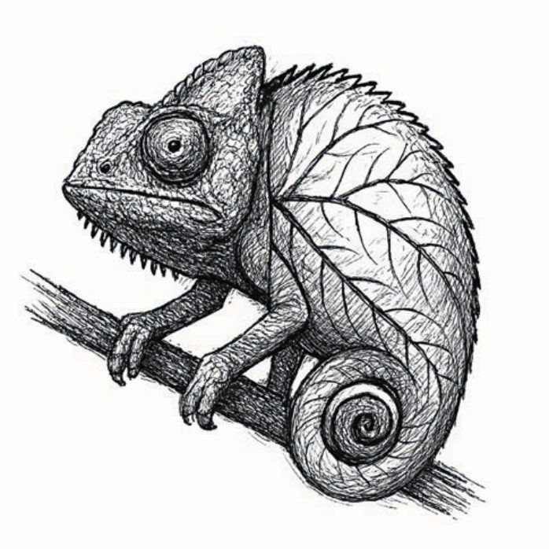
”En del av oss har bakgrunder i flera fält och kan använda det som en styrka. Jag själv är ingenjör i grunden men forskar om och använder design sedan femton år, i kombination med management-studier. Jag har känt att det hjälper att skapa legitimitet i industri- och näringslivsammanhang. Men jag går ofta med en stark ångest över att förenkla eller bagatellisera design, och inte använda dess fulla kraft.
Sammankoppla: Skapa platser och partnerskap för samlärande
Lära tillsammans med andra
En av de främsta drivkrafterna för transformation, och möjligheterna att få till förändring, är när människor krokar arm. I kapitel 3 (avsnittet om transformation) tog vi upp två loops modellen som beskriver det centrala i att pionjärer formar nätverk där de lär av varandra och utvecklar nya praktiker och idéer.
Samverkan i olika konstellationer gör att de här nya arbetssätten får fäste och ett bredare genomslag. I det tidigare kapitlet lyfte vi även vikten av sociala sammanhang och hur dessa också kan ge mening och bidra till kollektivt kunskapande.
Sådana här sammanhang kan uppstå organiskt eller faciliterat, och kan stöttas av formella och/eller fysiska samverkansplattformar. Docenten vid Umeå universitet Anna Croon skriver i rapporten ”Pilotprogram för inkluderande innovation - Erfarenheter från en regional testbädd för ett jämställt och inkluderande innovationsekosystem” – om det som kan uppstå i den här typen av kontaktzoner. Exemplet till vänster kan man också läsa om i boken ”Gendering Entrepreneurial Ecosystems Levelling the Field” av Marit Breivik-Meyer mfl.
Breivik-Meyer, M., Lindvert, M., Callerstig, A. C., Balkmar, D., & Alsos, G. A. (Eds.). (2025). Gendering Entrepreneurial Ecosystems: Levelling the Field. Taylor &
Francis.
Melina Bergström, RISE, berättar: ”Praktikgemenskaper är initiativ där organisationer och människor, förändringsledare, ja människor som vill göra på nya sätt samlas kring till exempel en samhällsutmaning, eller ett behov. I mitt fall har det handlat om samhällsutmaningar eller attraktivitet, eller om att skapa ett mer innovativt samhälle. De här praktikgemenskaperna som man bygger över tid med andra aktörer handlar om att skapa mod. Det är kontaktzoner mellan aktörer och institutioner, så att de får insikt och förståelse för vad andra gör på nya sätt, som de kan plocka med sig hem och testa i sina organisationer.
I en praktikgemenskap har vi bestämt en tematik tillsammans. Man samlas inom den, definierar behov, tittar på sig själv och vad man kanske inte gör. Man blandar kunskap med erfarenhetsutbyte och samskapande i den relationella trygga kontext som finns mellan aktörer, utanför det vanliga. Deltagarna vågar dela erfarenheter i en tillitsfull miljö över tid. Så uppstår det förändringsgnistor och processer som kan leda till att vi skapar nya verktyg och metoder. Vi definierar olika processer som har lett till bra resultat, eftersom det är en utforskande miljö. Och då har man möjlighet att få saker att hända, till exempel när det finns en ledningsfunktion med i ett sådant program.
Sen får man möjlighet att plocka hem det där sen, testa i den egna kontexten och göra om det till sitt, och där möta de interna utmaningarna och strukturerna. Vi har sett exempel på när en aktör fick input som testades hemma och sen lyfte upp resultaten i den här praktikgemenskapen, vilket då motiverade andra att göra liknande grejer. Och det här kan ju handla om helt olika kategorier – rekrytering, kultur eller erbjudande, eller att man har gjort en översyn av sina processer och beslutprocesser”.
Exempel från praktiken
Salong Krångel
Pernilla Glaser, Katarina Pietrzak, Lisa Carlgren, Ambra Trotto, Katarina Bonnevier, Gunilla Edemo, Mona Hallgren, Susanne Lundmark, Petra Bäckman, mfl
Salong Krångel föddes ur en längtan efter att bättre förstå och hantera de komplexa samhällsutmaningar vi står inför. Klimatkris, ökande klyftor, digital transformation – allt hänger ihop, men inget är enkelt.
Här samlas människor med helt olika perspektiv: konstnärer och konsulter, poeter och projektledare, forskare och förändringsledare. Tillsammans utforskar vi hur vi kan tänka nytt, förstå mer – och kanske våga förändra något, även när vi inte vet exakt vad.
Det är en inbjudan till alla som tycker att det känns rörigt, komplext eller bara väldigt svårt att veta var man ska börja. Kom som du är. Vi är många som känner likadant.
Salongen är inspirerad av de litterära salongerna i Paris under 1800- och 1900-talen – men här möts inte bara litteratur utan också erfarenhet, gestaltning och systemförståelse. Det är varken konferens, workshop eller panelsamtal, utan en plats där vi kan möta det vi inte förstår – utan att behöva lösa allt direkt.
En levande plats där berättelser, kroppar och idéer möts. Där vi får ta av oss rustningen av säkerhet och kliva in i samtal med öppenhet, nyfikenhet och en smula humor. Här får det krångliga, skaviga och oväntade ta plats. För just där, i friktionen, finns ofta fröet till insikt.

Salong Krångel har arrangerats av RISE, Sweco och designbyrån Savvy – men är till för alla. Den lever också och frodas på olika håll i mindre skepnad och specifika sammanhang, till exempel inom ramen för forskningsskolan Transplace. Vem vet – kanske dyker den upp, där du minst anar det.
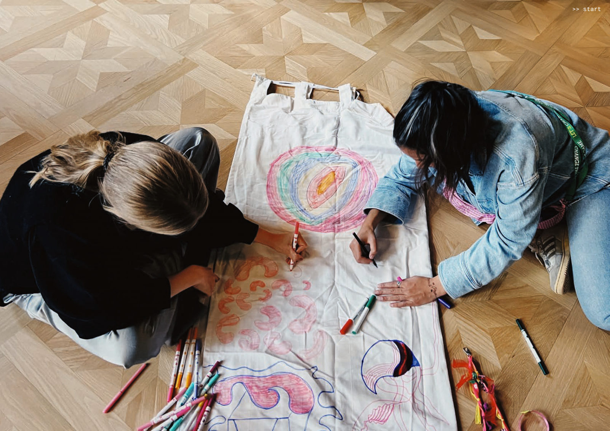
Samlärande genom visuellt skapande.
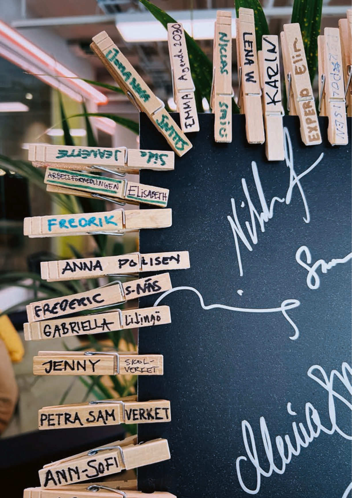
>> Start
Det tredje rummet - platser som möjliggör
utforskande
Ofta krävs neutrala "tredje rum" – platser som är oberoende av de utmaningar som finns inom det dominerande systemet. Syftet med platsen är att höja blicken och inte vara låst i existerande organisationer, processer, roller och mandat utan se till det gemensamma behovet. En plats för lärande, samverkan, utveckling och innovation. Dessa rum ger möjlighet att utveckla nya arbetssätt utan alltför många begränsningar som kan hämma förändring.
Centralt i det tredje rummet är att det är en jämlik plats som är välkomnande och hemmalik, där relationer och kunskapsdelning är i centrum, psykologisk trygghet råder och där till en stark vi-känsla och community. Platserna kan dock vara fysiska, digitala eller relationella – det viktiga är att de möjliggör utforskande och gemensamt lärande.
När deltagande är legitimerat och ses som värdefullt, är det också lättare att få till i praktiken. Därför kan etablerade fysiska platser och nätverk med namn och en identitet skapa legitimitet. På kommande sidor tar vi upp några exempel.
Exempel från praktiken
Samverket
Nina Bozic, RISE
Ett exempel på ett s.k. tredje rum (third place) är Samverket, en hub för coworking, samskapande lärande och samskapande lösningar kring komplexa samhällsutmaningar som kräver systemtransformation. Samverket samlade olika aktörer från den svenska offentliga sektorn och var ett pilotprojekt finansierat av Vinnova.
Den ursprungliga hubben i Östersund finns fortfarande kvar, och flera kommuner i Sverige har inspirerats av Samverket och utvecklar nu egna hubbar för systeminnovation. Syftet är att skapa plattformar där olika samhällsaktörer kan mötas och samverka kring gemensamma utmaningar.
Hubbar som Samverket byggs upp genom en gemenskap av medlemmar, där delaktighet formas genom delade ritualer (till exempel veckovisa välmåenderitualer, gemensamma samtal vid eldstaden och samskapande workshops). Dessa aktiviteter drivs av medlemmar som arbetar utifrån gemensamt överenskomna principer, ofta formaliserade i ett manifest. Specifika faciliteringsmetoder och rummets utformning används ofta för att stödja utvecklingen av sådana hubbar.
För mer information, se Samverket Playbook
Viable Cities
Vanja Östman, RISE
Viable Cities är ett strategiskt innovationsprogram som jobbar för missionen Klimatneutrala städer 2030 med ett gott liv för alla inom planetens gränser. Inom programmet arbetar 48 svenska städer tillsammans med flera nationella myndigheter, och Viable Cities arbetar utifrån en helhetssyn på hållbar stadsutveckling. Det innebär att programmet utgår från att alla i samhället måste inkluderas för att nödvändiga förändringar ska gå att genomföra. Och inom Viable Cities samverkar många viktiga beståndsdelar. En viktig del av arbetet är processledarna som leder omställnings- och förändringsarbete i städerna.
En central del i deras arbete handlar om att bygga omställningsteam och omställningsarenor, där stadens aktörer samarbetar för att identifiera och implementera lösningar för klimatomställning. Storytelling används för att förenkla och förändra narrativet och för att engagera fler i klimatomställningsarbetet.
Programmet främjar samarbete över sektorsgränser och bryter ner silos för att gemensamt utveckla lösningar i skärningspunkten mellan olika aktörer.
Human Gardening
Niklas Huss, Uppsala Kommun
Samverket (föregående sida) blev en modell, plats och rörelse som skapades för att möjliggöra samskapande samhällstransformation inom offentlig sektor. En av initiativtagarna var Niklas Huss som med erfarenhet från både offentlig och privat sektor, bland annat som innovationschef på Skatteverket och Länsförsäkringar, under många år har drivit frågor om hur vi bättre kan mötas, förändra och bygga system tillsammans.
Idag är han utvecklings- och innovationschef i Uppsala kommun – men kallar sig hellre human gardener. För honom handlar det om att skapa förutsättningar för människor att växa, lära och agera tillsammans. Det är först då verklig förändring blir möjlig. Samverket blev ett sådant utrymme – ett tredje rum för att bygga framtidens lösningar, där offentliga aktörer kunde ta av sig rustningen och kliva in i ett gemensamt utforskande.
- Vi har byggt starka system för att förvalta det vi redan gör. Men för att möta framtidens utmaningar krävs något annat. Vi behöver ett andra ben – ett lärande, mänskligt ben som får verka utanför systemets logik, men fortfarande vara en del av kroppen.
Samverket är alltså inte bara en plats – det är ett sätt att tänka och göra. Det är en konkret struktur för att skapa delaktighet, tillit och psykologisk trygghet. Genom symboliska ritualer, öppen design och gemensamma manifest blev Samverket ett nav för kollektiv intelligens, där titlar parkerades vid dörren och där människor möttes förutsättningslöst. För att lyssna. För att utforska. För att bygga nytt tillsammans.
"Vi byggde en plats med en lägereld i mitten – för att minnas hur vi blev människor: genom att lyssna. Det är vår näring – för kreativitet, empati och mänsklig kraft."


Skickliggöra: Skapa möjligheter för lärande och utveckling
Vi behöver utveckla transformationsförmågor
Teknologiska genombrott, klimatutmaningar, geopolitiska skiften och social fragmentering gör att allt fler av oss känner av att våra kompetenser och vår förståelse för hur världen fungerar, utmanas. För att kunna navigera i den tillvaron med all sin komplexitet, behöver vi utveckla och stärka vissa grundläggande kompetenser. Dessa pekar allt mer mot våra förmågor och möjligheter att ta oss an nya behov, arbetsuppgifter och problem , samt att vi behöver kunna omsätta all ny kunskap.
Vi behöver stötta pionjärer genom att skapa medvetenhet och bygga förmågor, och vi behöver skapa möjligheter för dem att hitta varandra och tillsammans utforska vägar framåt.
Möjligheterna att navigera i transformations-djungeln ökar om vi skapar genvägar, hackar tröga system och ruckar på invanda tankesätt. De här pionjärerna blir med rätt stöd och förutsättningar redo att ta vara på oväntade möjligheter och de kan då ta hand om oväntade svårigheter som riskerar att omkullkasta viktiga framsteg.
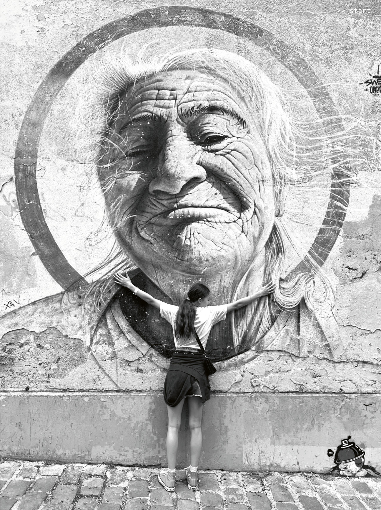
Lärande som process: bortom kunskap som resultat
I en tid av snabb förändring och osäkerhet är det avgörande att se lärande som en process snarare än en slutprodukt. Att förstå hur vi lär oss – snarare än att enbart mäta vad vi kan vid en given tidpunkt – är en förutsättning för att navigera en värld där kunskapens värde ligger i dess tillämpning, omprövning och utveckling.
Lärande är inte en linjär resa mot fasta mål utan en pågående rörelse där insikter växer fram genom utforskande, reflektion och kritisk granskning. Att mäta kunskap genom prov och tester kan ge en ögonblicksbild, men riskerar att skapa en illusion av färdighet snarare än en verklig förmåga att förstå och agera.
Den digitala utvecklingen har påverkat denna utmaning. Med AI och automatiserade informationsflöden har tillgången till fakta aldrig varit enklare – men att ha information är inte detsamma som att förstå den. Tekniken kan ses som ett hot (om fusk eller om källkritiska utmaningar), men den skulle även rätt använd kunna stödja ett fokus på processen lärande. Framtidens samhällen behöver människor som inte bara kan hitta rätt svar, utan också ställa rätt frågor. Här kan en sådan teknik som AI användas för att träna en sådan kompetens, istället för att bara generera fakta.
I skiftet där gamla system börjar vittra och nya initiativ växer fram är det inte statisk kunskap som driver utvecklingen, utan förmågan att lära, omvärdera och anpassa sig.
"Kultivering är ett lärande som odlar fantasi, känsla och omdöme – det vi behöver för att ta ansvar i en komplex värld.”
Julia Romanowska, forskare Karolinska Institutet
Den som ser lärande som en levande process är den som kan bidra till att forma nästa samhällsfas – medan de som håller fast vid ett traditionellt synsätt riskerar att fastna i det gamla.
I en tid av transformation blir lärande en överlevnadsstrategi, ett sätt att att skapa mening i en värld där det vi vet idag kan vara irrelevant imorgon. Det är inte längre frågan om vad vi har lärt oss, utan hur vi lär oss – och hur vi fortsätter att utvecklas.
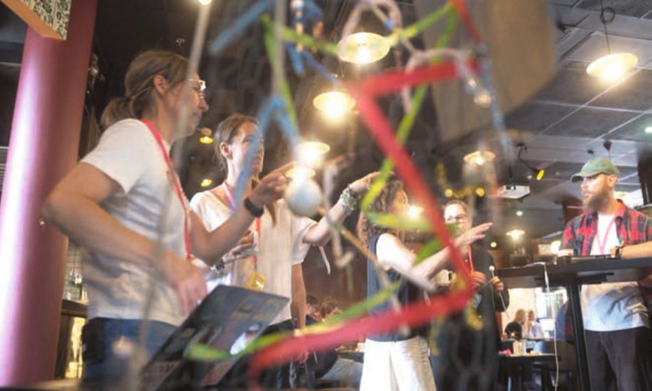
En ny syn på lärande: Läran att lära
Katarina Pietrzak,RISE
Lärande har länge setts som en linjär process i ett formellt system – vi börjar i skolan, fortsätter kanske genom högre utbildning och sen kanske vi får lite fortbildning inom vårt arbete.
Men i en värld som befinner sig i transformation är det inte längre tillräckligt att utforma sitt lärande som en linje och inom institutioner vid sidan av vår dagliga gärning – vi behöver kontinuerligt lära i olika cirklar genom hela livets alla kontexter. Utmaningen är att vårt sätt att tänka kring lärande fortfarande bär spår av det gamla systemet, där fokus ofta ligger på att i utbildning förmedla kunskap snarare än att odla motivation och drivkrafter.
Vad är Läran att lära? Projektet Läran att lära, ett samarbete mellan RISE Livslångt lärande, LTU, Umeå universitet, ABB, Omställnigsfonden, Nox Consulting och Sproutpark, har tagit sig an just den utmaningen. Hur kan vi jobba med lärande så att människor inte bara lär sig mer, utan faktiskt vill och kan fortsätta utvecklas?
Vi vet att vissa människor har lättare att känna nyfikenhet på att lära nytt, men hur kan vi designa så att alla får fatt i sin motivation och sin möjlighet att bidra till samhällets utveckling?
Genom att sätta de drivkrafter vi vet skapar lärande i fokus, har projektet utvecklat och testat metoder som bryter med traditionellt lärande. Genom digitala verktyg och nya metoder testar vi hur lärande kan bli mer motiverande, meningsfullt och hållbart.
Lärandets bidrag till omställning Den här omställningen kräver insatser både från utbildningssystem, arbetsgivare och individer själva. Men det börjar med att vi ställer rätt frågor:
- Hur kan vi göra lärande lustfyllt, meningsfullt och tryggt?
- Hur kan vi skapa miljöer där människor vågar vara nyfikna och reflektera över sitt eget lärande?
Läran att lära är ett av många initiativ som försöker besvara dessa frågor, och resultaten visar att det går – om vi vågar tänka om. Projektet Läran att lära har därför strävat efter att transformera vår syn på lärande genom att utveckla såväl förhållningssätt som digitala verktyg som stödjer individers motivation och förmåga att kontinuerligt utvecklas.
Genom att kombinera forskning med praktiska lösningar, hoppas projektet skapa förutsättningar för både metodik och kultur där lärande ses som en naturlig och ständigt pågående del av livet.
Drivkrafter för lärande
- Inre motivation – Lärande som drivs av nyfikenhet snarare än yttre belöningar.
- Nyfikenhet – Utrymme för utforskande och frågor.
- Psykologisk trygghet – En kultur där det är tryggt att misslyckas.
- Framplockning – Aktiva metoder som stärker minnet.
Alla dessa mynnar ut i självreflektion, där individen själv tar en aktiv roll i sitt lärande. Tidigare forskning visar att vi lär oss bättre när vi får feedback och stöd, men projektet undersöker om även digitala avatarer eller spegling av ens egna reflektioner kan ge liknande effekt.
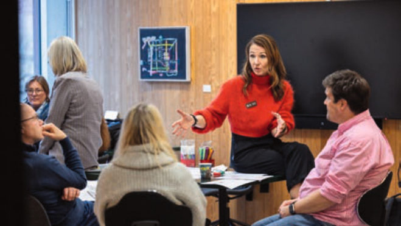
Lärande bortom utbildning
I en värld där förändring är det enda konstanta, behöver vi se lärande som något mycket mer än enstaka utbildningsinsatser. Det handlar om att skapa en kultur där lärande är en levande del av vardagen – i samtal, i samarbete, i reflektion. Det innebär att lärande sker i många olika former – genom möten, förändringscirklar, erfarenhetsutbyten och gemensamma reflektioner.
Det handlar om att skapa förutsättningar för att människor ska kunna lära av varandra och tillsammans utveckla nya sätt att tänka och arbeta. Ett exempel på detta är Schibbolet-effekten som vi skrivit om i boken, som handlar om att skapa en gemensam förståelse och språk inom en organisation. Genom att arbeta med kultivering och gemensamma värderingar kan vi skapa en lärandekultur där alla känner sig delaktiga och engagerade.
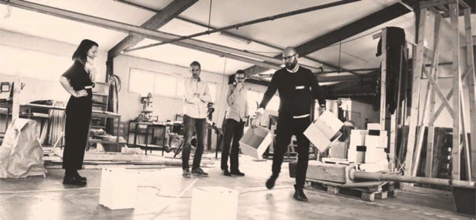
Exempel från praktiken
Att leda i det okända: skolledarskap i en tid av transformation
Lotta Fransson, RISE
Skolledarskap utövas idag i ett landskap i rörelse. När samhälleliga förändringar, teknologiska skiften och nya krav möter gamla strukturer, uppstår spänningar som inte kan lösas med mer av det gamla. Det kräver något annat – nya sätt att tänka, leda och lära tillsammans.
FutureReady by RISE är ett initiativ som utforskar vad det innebär att vara ledare i skolan just nu – i en tid av pågående transformation. Genom samtal, reflektion och gemensamt utforskande får deltagarna möjlighet att närma sig framtidsfrågorna inte som prognoser, utan som något de själva är med och formar.
Programmet är ett sätt att pausa vardagens styrlogik och i stället rikta blicken mot frågor som: -Vad betyder det att vara ledare i förändring, inte genom förändring? – Hur kan skolledare bli kulturbärare för lärande snarare än kontroll? – Vad krävs för att navigera i komplexitet utan att fastna i förenkling?

Varför behövs den här typen av kompetens? I en samtid präglad av snabb förändring och komplexa samhällsutmaningar står skolan inför nya utmaningar och ett växande behov av förnyelse. FutureReady bygger på fyra teman: samhällstransformation och utbildning, professionellt lärande, framtidens skolledare och ledarskap som kollektiv kraft. Det är en process där skolledare tillsammans tränar sin förmåga att hålla kurs när kartan ritas om.
Vad leder det till? Deltagarna får möjlighet att rikta blicken framåt – inte bara mot framtiden som idé, utan som något de redan är en del av. Ett gemensamt språk börjar ta form kring de komplexa utmaningar som skolledare dagligen möter. Genom samtal och reflektion växer en ökad medvetenhet fram om behovet av att förnya inte bara strukturer, utan också sättet att förstå och utöva ledarskap.
”Genom modellerna och reflektionerna i lärgrupperna är jag mer rustad att ta mig an mitt framtida ledarskap”

FutureReady by RISE
Lärandets roll ett inkluderande samhälle
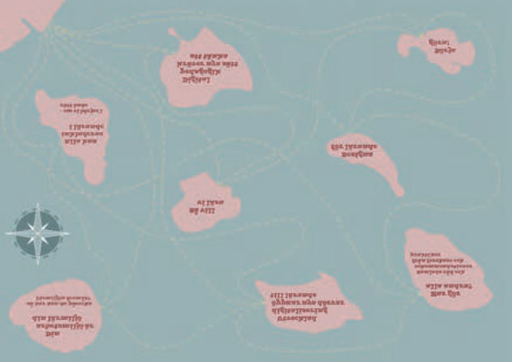
Lärande är en av de starkaste drivkrafterna för förändring och transformation vi har – för individer, organisationer och för hela samhällen. Men trots att vi lever i en tid där kontinuerligt lärande för alla är avgörande, sitter vi fortfarande fast i gamla strukturer som exkluderar stora grupper från lärandeprocessen. Det sker genom såväl vårt förhållningssätt, som genom en design som inte bjuder in alla. För att framtidens samhälle ska bli mer resilient, innovativt och hållbart måste vi skapa ett inkluderande lärandesystem där alla har möjlighet att delta.
I traditionella utbildningsstrukturer har kompetensutveckling och lärande ofta varit en fråga inom formella strukturer och för de redan utbildade – de med akademisk bakgrund, god studievana eller de som arbetar i miljöer där lärande är en naturlig del av arbetet.
Samtidigt visar forskning att de grupper som står längst ifrån dessa strukturer, ofta inte ser lärande som en självklarhet i sitt yrkesliv. Detta beror inte på brist på nyfikenhet eller utvecklingsvilja, utan på att lärandeformaten inte är anpassade efter deras förutsättningar. Idag behöver vi kunna tillvarata potentialen hos alla människors tankar, insikter och bidrag till utvecklingen.
Det etablerade systemet för lärande och utveckling bygger också på en hierarkisk och centraliserad syn på kunskap som resultat, där vi utgår ifrån att allt nödvändigt lärande sker i formella kurser och strukturerade utbildningar. Men det systemet börjar nå sin gräns – det exkluderar för många och är inte tillräckligt flexibelt för att möta de kompetensbehov som uppstår i en samhällstransformation.
Vi behöver skapa broar mellan det gamla och det nya – där lärande är tillgängligt, relevant och en integrerad del av vardagen för alla.
En stor del av forskningen om livslångt lärande visar att motivation och autonomi är avgörande faktorer för att alla ska känna sig inkluderade.
Det är också så resultaten av satsningar på kompetensutveckling kan bli framgångsrika. Människor som får styra sin egen utveckling - där lärandet är direkt kopplat till deras drivkrafter, erfarenheter, reflektioner och behov - är viktiga i transformationen. Det är hos alla dem, som utvecklingen vi behöver föds.
För att göra skiftet till en mer inkluderande lärandemodell behöver vi:
- Göra lärandet tillgängligt där människor finns. Digitala lösningar och flexibla format måste komplettera traditionella utbildningar, inte ersätta dem.
- Flytta fokus från kurser till kultur. Lärande ska vara en integrerad del av arbetet, inte en separat aktivitet som sker vid sidan av.
- Prioritera motivation och meningsskapande när vi designar lärande. Kunskap och en lärandeprocess som känns meningsfull leder till bättre läranderesultat och ökad innovationskraft. När vi inkluderar alla i lärandet skapar vi ett samhälle som är mer utvecklingsorienterat, anpassningsbart, resilient, innovativt och redo att möta utmaningar. Den transformationen har redan börjat – men vi behöver fler brobyggare mellan det gamla och det nya.
Läs mer om inkludering i lärande på arbetsplatser här
Exempel från praktiken
Ledarskapslabbet där unga formar framtidens samhälle
Josephine Bladh, Konung Gustaf V:s 90- årsfond, Lisa Carlgren, RISE
Ungdomsrörelsen i Sverige är stark och ungas engagemang är högt. Omvärlden är snabbrörlig och megatrender påverkar ledarskapet i samhället. En föränderlig värld med nya, engagerade ungdomsgenerationer kräver unga ledare som kan tänka nytt kring ledarskap och demokratisk organisering.
Ledarskapslabbet är en katalysator som tillsammans med ungdomsrörelsen i Sverige utvecklar nya sätt att leda och hitta innovativa lösningar på de samhällsutmaningar vi står inför. Det är ett ledarskapsprogram, finansierat av Konung Gustaf V:s 90-årsfond. Genom experiment och innovation utvecklar deltagarna lösningar för att möta komplexa samhällsutmaningar. Ledarskapslabbet erbjuder verktyg, mod och stöd för unga ledare att utforska nya sätt att organisera sig och våga testa idéer, samt att lära av både framgångar och misslyckanden.
Hur går Ledarskapslabbet till i praktiken? Ledarskapslabbet är i grunden en utbildning i innovativt ledarskap genom design thinking, där deltagarna utmanas genom att applicera metodiken när de jobbar med sina utmaningar under 20 veckor.
2025 har tio ungdomsorganisationer antagits med en komplex samhällsutmaning som är i linje med föreningens ändamål. Varje organisation deltar med en labbgrupp på fyra personer, varav tre är under 30 år: ofta generalsekreterare, förbundsordförande ordförande, och/eller lokala ungdomsledare.
https://gv90.se/ledarskapslabbet/
Utvecklingen sker genom ett antal fysiska labbtillfällen och arbete däremellan, med en tydlig process strukturerad i ett antal faser kopplat till specifikt pedagogiskt innehåll i träffarna.
De flesta deltagare har låg kunskap om design thinking innan, och de komplexa frågorna med deras inneboende relationer och systemknutar ger upphov till många lärmöjligheter när deltagarna ska navigera den osäkerhet och de överraskningar som uppstår under resans gång.
Lärandet förstärks genom ett innovativt stödsystem i form av erfarna teamcoacher, inbjudna experter, och möjlighet att söka extra bidrag för att möjliggöra sprintar, tester, fysiska träffar, eller få annan extern inspiration.
Exempel på utmaningar 2025:
“Många unga ser sig inte som ledare och saknar förebilder. Vår organisaion vill inspirera unga till demokratiskt ledarskap i mindre samhällen genom hållbara och inkluderande modeller”. (Förbundet Vi unga)
“Urbanisering och digitalisering har minskat intresset för traditionella föreningsformer, och social samt ekonomisk ojämlikhet begränsar ungas tillgång till kulturellt och socialt kapital. Vår organisation vill skapa inkluderande plattformar där unga från olika bakgrunder kan delta och leda genom kreativitet och demokrati”. (United Soul)
“Sjunkande läs- och skrivkunnighet och minskande intresse för föreningsliv bland unga är utmaningar, och vår organisation vill använda spelkultur som verktyg för att engagera och stärka unga ledare samt stärka läs- och skrivkunnigheten”. (Sverok)
“Klimatkrisen och förlust av biologisk mångfald skapar maktlöshet bland unga, och vår organisation vill utveckla metoder som stärker deras förmåga att driva lokal och nationell förändring”. (Fältbiologerna)
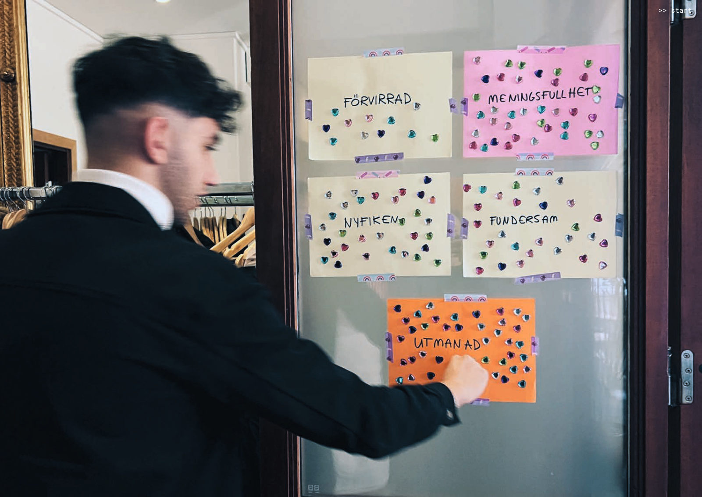
Ledarskapslabbet har fokus på lärande genom upplevelse, och den personliga utveckling som uppstår genom att kämpa sig genom projekt. Nya insikter kring den djupare komplexiteten i den egna verksamheten kan vara plågsam men viktig.
Samskapa alternativa framtider: Spekulativa prototyper
Vi kan inte försäkra oss om framtiden, men vi kan skapa bilder, berättelser och föremål som hjälper oss att förstå vart vi är på väg – och vad vi egentligen vill.
Framtidsprototyper och spekulativ design är metoder för att synliggöra möjligheter, risker och önskvärda riktningar genom att konkretisera och utforska hur framtiden kan se ut. Genom att skapa fysiska eller visuella objekt från framtiden – och placera dem i nutiden – blir det lättare att känna, förstå och prata om det vi annars har svårt att greppa.
Spekulativ design utgår från frågan ”Tänk om?” och hjälper oss att släppa taget om dagens begränsningar. Genom att tänja på det möjliga blir det också lättare att identifiera det önskvärda. Det handlar inte om att förutse framtiden utan om att forma alternativ som kan öppna för nya samtal, perspektiv och val.
Framtidsprototyper fungerar som katalysatorer i förändringsarbete. De hjälper oss att tänka långsiktigt, få syn på systemförändringar och inkludera fler röster i samtalet om framtiden. De kan också bidra till en mer inkluderande och demokratiskt förankrad innovationskultur, där människor får vara med och forma det som annars upplevs som för stort, tekniskt eller avlägset.
Att arbeta med framtidsprototyper kräver både analys, fantasi och samarbete. Det börjar ofta med att förstå vilka samhällsfrågor vi står inför – och vilka perspektiv som saknas. Genom att samla in svaga signaler och tolka dem i form av framtidsartefakter skapas en gemensam yta för reflektion, handling och dialog. När framtiden får besöka samtiden blir det tydligt: Vi är inte bara mottagare av framtiden – vi är också medskapare.
Att gestalta det möjliga – och möjliggöra det omöjliga
Exempel från praktiken
Medskapande framtid – i våra organisationer
Álvaro Aranda Muñoz, Nina Bozic Yams, Lisa Carlgren,RISE
Hur kan vi hjälpa anställda i organisationer att gå från att vara passiva mottagare av förändring till att aktivt skapa den framtid de själva föredrar? Hur kan vi hjälpa dem att tänka annorlunda om sina roller, arbetsflöden och sammanhang, samtidigt som de navigerar i de osäkerheter som tekniska framsteg och AI:s utveckling medför? Dessa frågor inledde vår resa för att hjälpa en svensk offentlig akademi som utbildar sjukvårdspersonal såsom läkare, sjuksköterskor, barnmorskor och tandläkare.
Vi utformade och testade en Co-Experiential Futuring-metod (att utforska framtider genom upplevelser) som ett sätt att stödja organisationer som står inför kontinuerliga omvandlingar. Vi gjorde det ur ett samarbetsperspektiv där vi bakade in spekulativ design och konst i framtidsprocessen. I den här processen fick deltagarna möjlighet att aktivt skapa en egen önskad framtid genom en resa på fem workshops.
Under dessa gick deltagarna successivt från abstrakt utforskande till konkret åtgärdsplanering.
Det gjorde det möjligt för deltagarna att utveckla en känsla av handlingskraft och ägande över sin professionella framtid.
Vår workshopmetod i fem steg
1. Utforska nuläget: Identifiera aktuella utmaningar och önskemål om förändring, skapa visuella collage som visar styrkor och utvecklingsmöjligheter inom organisationen.
2. Samskapa framtidsscenarier: Med utgångspunkt i samhällstrender och inspirerande framtidsmaterial, utveckla spekulativa berättelser om inlärningsmiljöer för år 2050, och fysiska modeller för att representera dessa scenarier.
3. Utveckla framtida roller: Utforska framtida arbetsroller som möjliggör lärande och kompetensutveckling. Med hjälp av en specialdesignad kortlek utveckla spekulativa berättelser kring roller som möjliggör lärande.
4. Prototypa tekniska superkrafter: Skapa enkla prototyper som representerar hur teknik kan förstärka deltagarnas framtida roller. Utforska hur dessa tekniska lösningar skulle stötta framtida roller och sammanhang.
5. Förverkliga och reflektera: Förkroppsliga framtidsscenarier och identifiera konkreta initiativ och handlingsplaner för att genomföra de insikter som uppstått genom processen.
Vad lärde vi oss av projektet och den metod vi skapade?
Den samskapande metoden främjade aktörskap och ägarskap bland deltagarna. Kombinationen av kreativa aktiviteter i en tillåtande atmosfär bidrog till att deltagarna kände ägarskap att forma sin framtid inom organisationen. Dessutom underlättade metoden samarbete över organisationsgränser och stuprör mellan olika avdelningar. Deltagarna fick nya perspektiv och insikter kring hur man kollektivt kan navigera förändringar.
De konstnärliga inslagen i workshoparna fungerade som kritiska provokationer, som knuffade deltagarna utanför sina komfortzoner och uppmuntrade dem att ifrågasätta etablerade organisatoriska paradigm. Detta återspeglades under workshopresan där deltagarna utvecklade kritiska perspektiv på teknik: de reflekterade på djupet över att upprätthålla en balans mellan tekniska framsteg och mänskliga värden, särskilt med tanke på att bevara etiska aspekter av exempelvis vård, under anammandet av digitala verktyg.
Välkommen Till Bords
Hayley Ho, Elsa Vaara, RISE
Oavsett vilken ålder vi har just nu – så blir vi alla äldre. I framtiden kommer andelen äldre att öka och samhällets kostnader för äldreomsorgen ökar drastiskt.
"We Are All Old" är ett designforskningsprojekt av Hayley Ho och Elsa Vaara som inbegriper samtal om framtida äldreomsorg genom en engagerande och förkroppsligande upplevelse. Genom en blandad designmetodik och konstnärliga praktiker, deltar de medverkande i designprototyper där de får fundera över vad de vill ha i sin egen ålderdom och vad de kan göra för att bidra till denna framtid.
I prototypen Välkommen Till Bords samverkar RISE med Livsmedelsakademin. Prototypen de skapat fungerar som en popup-utställning och är designad som en fyrarätters middag runt ett stort bord. Upplevelserna vid bordet tar deltagarna med på en resa där de får skapa en relation till sitt framtida äldre jag. De får även spekulera kring hur de kan förändra äldres måltidssituationer här och nu.
Projektets resultat i den spekulativa matprototypen, fungerar som en popup-display. Syftet med projektet är att hjälpa människor att föreställa sig en framtid där ingen äldre är undernärd och där hela måltidsupplevelsen är en tillfredsställande och positiv upplevelse.

Att leva med solen – energiomställning med relationer i centrum
Fanny Lindh, Haley Ho, RISE
SIMBY – Sun In My Back Yard är ett tvärdisciplinärt forskningsprojekt som utforskar solenergi ur ett kulturellt, personligt och systemiskt perspektiv.
Bakgrund: Utvecklingen av sol- och förnybar energi är idag ofta teknik- och marknadsdriven, där det är de redan identifierade behoven hos en teknikintresserad målgrupp som styr. Det gör att andra värden, känslor och relationer till energi ofta hamnar i skymundan.
När nya energianläggningar etableras kan det leda till motstånd – det så kallade "not in my backyard"-fenomenet – eller till målkonflikter mellan olika hållbarhetsmål. Till exempel kan behovet av energiförsörjning krocka med människors behov av vackra, avkopplande livsmiljöer och kulturhistoriska värden.
Istället för att låta teknik, marknad eller politiska beslut definiera framtiden för solenergi, ställer SIMBY frågan: Vad händer om vi börjar med människors egna erfarenheter och relationer till solen?
Projektet samlade under ett år konstnärer, formgivare, forskare och aktörer från industrin för att gemensamt undersöka hur solenergi kan bli en del av våra liv på nya sätt.
SIMBY erbjuder en plats för långsam och gemensam reflektion, där ovisshet ses som en resurs snarare än ett hinder. I stället för att försöka förutsäga framtiden, ville projektet stimulera till nya sätt att tänka, känna och samarbeta kring energiomställning. Det handlar om att bygga kulturell beredskap – inte bara teknisk – för en framtid där solen får en mer närvarande och meningsfull roll i våra liv.
Projektet byggde på designmetodik där fokus ligger på att öppna upp frågor och utforska framtidsmöjligheter som vi ännu inte kan se.
Genom fyra säsongsbaserade workshops – vår, sommar, höst och vinter – knöts vårt förhållande till solen samman med årstidernas skiftningar. Deltagarna bjöds in till poetiska övningar, berättande och spekulativ design för att utforska solens roll i sin vardag, sina minnen och sina framtidsvisioner.
Efter en digital workshop för att testa formatet, genomfördes den första fysiska workshopen ”Sun & Snow – Reflections” under vintern på Röhska museet. Deltagare fick skriva berättelser om sina möten med solen, ta del av vidare perspektiv kopplade till vintersolen – från konst, samhälle, vetenskap, andra kulturer – och sedan både gemensamt och enskilt reflektera kring vår relation till solen. Vår- och sommardelarna genomfördes fysiskt på Vandalorum konsthall där verket också presenterades i en solutställning under hösten 2024. Projektet innebar också ett konstnärligt samarbete med Ung Svensk Form,.
Den här filmen av Patrik Johansson ger en inblick i den samskapande designprocessen. Mer information om SIMBY finns här.

Teknologiutveckling med människan i fokus
Teknologi i takt med människan
I kapitel 2 nämnde vi riskerna med att fokusera alltför mycket på nya teknologier och möjligheter med digitalisering utan att ta hänsyn till kontexten i vilken tekniken är tänkt att användas och vilka underliggande behov och problem den är tänkt att adressera.
Därför är det viktigt att tidigt i teknologiutveckling, eller i val kring tekniska lösningar, inkludera kompetens om mänskliga, sociala och systemiska faktorer.
Det finns också en praktisk aspekt: hur införs tekniken i sammanhang där den från början inte passade in? Den behöver anpassas för att möta strukturer som redan finns – såsom IT-infrastruktur eller företagskultur – där vissa aktörer kanske vill, eller absolut inte vill, använda ny teknik i sin vardag.
Förändring väcker ofta oro eller motstånd och tekniska lösningar kan verka skrämmande eller medföra oro för ökade krav på anställda. Organisationer är sociala system där människor och teknik samverkar – att införa något nytt påverkar hela det sammanhang där dessa delar vuxit ihop över tid.
Det är lika viktigt att förstå var tekniken inte ska användas, som att förstå när och hur den bör användas för att ge bästa effekt.
En del av arbetet med att facilitera transformation är att stötta samhällsaktörer i deras digitaliseringsresor, och att göra det med människa och system i fokus.
Exempel från praktiken
Samskapande för hållbara matsystem bortom tekniken
Kristina Andersson, Ann Lorentzon, Lisa Carlgren, RISE
MOC är ett EU-projekt om matsvinn som ligger långt fram i teknikutveckling. Det handlar om att utveckla en smart förpackning som kan känna av matens tillstånd, justera bäst-före-datum och ändra vad som står på etiketten. Det rör sig bort från idén om att innovation sitter i prylar och in i frågor om relationer, regelverk och ansvar. Ett syfte är att förstå hur olika aktörer i matsystemet – producenter, forskare, handlare och konsumenter – tillsammans kan utforska nya vägar mot mindre svinn.
Tanken är att den smarta förpackningslösningen ska minska matsvinn genom att konsumenter inte slänger fullgod mat bara för att bäst-före-datumet gått ut, och att leverantörs- och försäljningsledet ska bli bättre på att hålla sina rutiner så att mat inte måste slängas.
Den tekniska lösningen är komplex, en kombination av själva lådan, en skyddande lösning som sprayas på emballaget, en smart etikett som fungerar som sensor och har ett bläck som kan ändra utseende kopplat till vad den känner av. Det finns även europeisk lagstiftning som riskerar att sätta käppar i hjulet i flera led.
Komplext upplägg: Projektgruppen består av ca 50 personer från olika länder och organisationer där några experimenterar med hållbarhet, några med bakterier och fermentater. Några utvecklar etiketter, sensorer och bläck, vilket är svårare än man trodde. Några försöker få till en plastbox och film som klarar återvinningskrav och massproduktion.
Några försöker förstå kunder – men processerna är långa och teknikutvecklarna behöver tidiga svar. Några gör livscykelanalys – men det är inte enkelt att enas om vad som ska ingå och hur. Några utforskar policy-djungeln – men inser att det är allt annat än logik som ger långtgående förändringar i livsmedelslagar.
Olika principer ställs mot varandra och vilken som vinner beror på exempelvis på hur man definierar hållbarhet och vad man tycker är projektets problem. Kan en förpackning som är svår att återvinna ändå vara miljövänlig för att den i förlängningen gör så att mindre mat slängs?
Konsumenternas inställning är en joker i leken: Tänk om konsumenterna inte förstår funktionen och blir osäkra och slänger maten ännu tidigare – så att lösningen får motsatt effekt? Eller om producenter och försäljare drar öronen åt sig?
Hur stor är miljövinsten? En kycklingfilé som produceras i Norge har betydligt längre hållbarhet än en som produceras i Portugal – förbättringspotentialen skiljer sig mycket.
Kommer portugiserna vilja ha kyckling som håller längre än de är vana vid, eller kommer de tycka själva tanken är konstig även om kycklingen är ätbar? Vill de norska laxproducenterna sälja lax med längre hållbarhet när riktigt färsk fisk anses som premium? Om ett EU-policyförslag går igenom, tappar man de tyska kunderna om produkter inte kan säljas som ekologiska?
Ska man ta en omväg genom att utveckla en komplicerad teknisk lösning när man skulle kunna reducera matsvinn på andra sätt – exempelvis om portugiserna i sommarvärmen kunde få hem kycklingen utan att den blev dålig på vägen?
Det blir som med hönan och ägget. Utan teknikutveckling går det inte att veta om den tekniska lösningen ens är möjlig. Utan konsumentförståelse så vet man inte om teknikutvecklingen är till nytta. Och europeisk lagstiftning rör sig så mycket men ändå så långsamt att det är svårt att säga om lösningen blir regulatoriskt möjlig.
Ett sånt här projekt vinner oerhört mycket på att man inte enbart fokuserar på tekniken och vad som är tekniskt genomförbart.
Man behöver ställa de kritiska frågorna, och deltagare från de olika områdena behöver interagera med varandra och se varandras perspektiv. Med hjälp av designinspirerade metoder synliggör vi antaganden som tas för givna, belyser var det finns behov att skapa bryggor, lägger grunden för samverkan mellan grupper och uppmuntrar till en prototypande ansats som ökar möjligheter till kommunikation.
Tyresö digitaliserar med hjärta och eftertanke
Jessica Dagman, Lina Orell, Patrik Eriksson, Niklas Carlborg, Marcus Tyrén, RISE
Sverige står inför betydande demografiska förändringar, där befolkningen förväntas öka med över två miljoner människor fram till 2070. Den största ökningen sker i de äldre åldersgrupperna, vilket innebär att en större andel av befolkningen kommer att vara äldre. Detta ställer höga krav på kommunerna att utveckla och anpassa sina välfärdstjänster för att möta de förändrade behoven.
Tyresö kommuns arbete inom äldre- och omsorgsförvaltningen visar hur en kommun kan anpassa sig till demografiska förändringar och samtidigt utveckla innovativa välfärdslösningar för att möta framtidens utmaningar.
Kommunens ansats till ny digital teknik och utveckling är en medveten transformationsprocess där människan och samhällets behov konsekvent har stått i centrum.
Resan initierades med insikten om framtida utmaningar – en åldrande befolkning och en potentiellt stagnerande eller minskande personalstyrka. Kommunen ville utforska hur tekniken kunde möjliggöra en mer hållbar och kvalitativ vård och omsorg och samtidigt förbättra arbetsmiljön för de anställda.
Arbetet präglas av en syn på digitalisering som ett medel för att uppnå mål kopplade till människors välbefinnande och en förbättrad arbetsmiljö.
En central aspekt i transformationsarbetet har varit formuleringen av tydliga och värderingsdrivna principer. Dessa har fungerat som en kompass genom digitaliseringsprocessen och säkerställt att tekniken tjänar ett högre syfte än enbart effektivisering. Principer som trygghet, minskat socialt och digitalt utanförskap, medborgarnytta och en attraktiv arbetsplats har aktivt väglett beslutsfattandet och projektet.
Runt 30 olika digitala lösningar har införts under en femårsperiod. Implementeringen av trygghetskameror adresserar trygghetsaspekten samtidigt som den effektiviserar nattarbetet och initiativet med digitala fixare syftar till att minska digitalt och socialt utanförskap bland seniorer.
Tyresö har tillämpat en iterativ och utforskande ansats med pilotprojekt och stegvis implementering, vilket möjliggjort kontinuerlig utvärdering och anpassning. Involvering och delaktighet har varit centralt, med fokus på att skapa förståelse för nyttan med digitala lösningar hos alla berörda parter.
Tyresö ser digitalisering som en kulturell förändringsprocess, där digitalisering är ett verktyg för att uppnå mänskliga och
samhälleliga värden.

Smart City Lab blev
och ett skifte från dagens stuprörsstruktur till en sammankopplad, horisontell struktur. Detta kräver – utöver teknik, standarder och ramverk för datahantering – också nya kompetenser, koncerngemensamma rutiner, visionär styrning och effekthemtagning på en mer övergripande nivå. Det kräver en kultur som genomsyras av gemenskap, delning och innovation – och sist men absolut inte minst – ett mod och en stark sammanhållning; såväl i ledningen som i och mellan verksamheter. Det som beskrivs är en bred organisationsförändring.

Therese Balksjö, RISE
Tillgång till IoT-data (Internet of Things) och ökad informationsdelning inom och mellan Sveriges kommuner – och vidare – är avgörande för att skapa ett hållbart samhälle. Men vi är inte där än.
Det finns idag teknik, infrastruktur och principer för att dela data på ett standardiserat sätt enligt EU:s rekommendationer. Detta nyttjas dock inte fullt ut i majoriteten av kommunerna. Därför skapades år 2021 projektet Smart City Lab: kommunernas stödfunktion för datadriven utveckling. Vi förstod att utmaningen inte enbart är teknisk, men vi hade en naiv tro på att ”om vi alla bara enas om standarder och ramverk – då är vi väl där?”. Det visade sig att den organisatoriska utmaningen var större än vi först anade. Vad som saknas idag är en kommun(-koncern-)gemensam datahantering
Idag brister förmågan att genomföra denna förändring. Här pratar vi om en brist på omställningskapacitet i organisationen, inte minst på grund av kommuners ”silofiering” – ett stuprörstänkande inom organisationers verksamheter, uppdrag, budget och mandat.
För att minska silofieringen krävs en omställningskapacitet, och för att skapa kapaciteten krävs att organisationen bryter sig lös från silofieringen. Här står vi alltså inför ett moment 22 som kräver en systemisk transformation.
Under våren 2025 skapades därför projektet Smart City Transformation Lab – för att stötta kommunerna i att utveckla sin mottagar- och omställningskapacitet. Syftet är att arbeta med en faktisk förflyttning gällande kommungemensam IoT och informationsdelning som verktyg för att skapa smarta hållbara städer och kommuner / koncerner.
Ett verktyg som används är ”IoT-resan” – även kallad ”Strängnäs-modellen” eftersom den togs fram tillsammans med och tillämpades i Strängnäs kommun. Den kan ge:
o En ökad kommun(-koncern-)gemensam samverkan och ett engagemang från både ledning och medarbetare samt behovsägare.
o Insikter om vilka utmaningar och behov kommunen har på området.
o En uppfattning om vilka insatser som krävs för att komma framåt på IoT-resan.
o En bred medvetenhet om vilka ökade nyttor detta kan innebära för kommunen.
IoT-resan / Datamognadsresan / Strängnäs-modellen
Interaktiva, immersiva upplevelser som stöd för lärande och transformation
När det kommer till samhällstransformation och nya teknologier ser vi en enorm utveckling, ibland från oväntade håll. Till exempel kan verktyg som tidigare använts helt och hållet för underhållning i spelindustrin visa sig vara mycket användbara för att samla stora mängder data, samt skapa modeller som man kan interagera med på ett intuitivt sätt i fleranvändarmiljöer – för att förstå sådant som tidigare varit svårt att greppa.
När det gäller kultur och museiupplevelser kan du nå platser som tidigare var otillgängliga. Virtuella miljöer kan till exempel ge tillgång till ett museum som du annars inte skulle kunna besöka i verkligheten, för att det inte är anpassat för tillgänglighet eller helt enkelt ligger i ett annat land. Upplevelserna kan också göra det som tidigare var omöjligt möjligt. I VR eller AR kan du få se ett stilla museiobjekt komma till liv i sin historiska kontext med digitala filter och utforska historia genom att omsluta dig i den.
I skolan kan interaktiva verktyg – baserade på spelmotorer – används för att bygga hela virtuella lärandevärldar, som har förmågan att anpassade lärandet för den enskilda eleven och låta eleven bygga sitt eget lärande med utforskande, experimenterande och nyfikenhet. Med AI kan också lärandekontexten hela tiden forma sig efter elevens lärandebehov i stunden och introducera nya sätt tänka som ger varje elev mest lärande.
Allt detta bygger på olika tekniska system som behöver knytas ihop – och de systemen blir alltmer komplexa. Med den här komplexiteten är det viktigt att förstå hur systemen hänger samman, men också att kunna se vart investeringen leder, till exempel i form av lärandeeffekter.
Ofta ser vi teknologi som något att utforska, men i tillämpade forskningsprojekt försöker vi främst närma oss teknologin genom en användarcentrerad lins. Till exempel fokuserar vi på hur Virtual Reality faktiskt ger effekt i lärande – vilket är viktigare än att flera skolor använder tekniken utan dokumenterad effekt. Det är lika viktigt att förstå var tekniken inte ska användas som att förstå när och hur den bör användas för att ge bästa effekt. Det handlar om att kunna svara på grundläggande och viktiga frågor om pedagogik och informationsutbyte – i skolans miljö såväl som lärande inom industriella scenarion.
Bortom forskningen finns det också en väldigt praktisk aspekt: hur införs tekniken i sammanhang där den från början inte passar in? Vissa aktörer kanske vill, eller absolut inte vill, använda ny teknik i sin vardag. IT-infrastruktur och företagskultur är båda exempel på viktiga områden som inte kan förbises. I många fall behöver tekniken anpassas för att möta organisationens befintliga strukturer och vice versa för att ha långsiktig effekt och stående positiva effekter hos människorna som använder den.
Exempel från praktiken
Citiverse: Att öva systemförståelse med teknikens hjälp
Martin Törnros, Magnus Eriksson, Jenny Lööf, RISE
Citiverse är ett internationellt projekt som utvecklar en inkluderande och användarvänlig digital tvilling av Göteborgs stadsmiljö. Denna kan även fungera som referensmodell för digitala tvillingprojekt på andra platser.
En digital tvilling är en virtuell 3D-miljö, i detta fall med syftet att efterlikna den verkliga stadsmiljön i dess utseende och känsla. Den använder sig även av olika datalager för att exponera den "osynliga staden". I Citiverse-projektet ska denna digitala modell stödja tillgänglighetsbehov hos människor som vill besöka staden och låta dem planera, navigera och uppleva hur ett besök skulle kunna se ut, samt hur det kan göras mer tillgängligt.
Projektet fokuserar på behoven hos familjer med barn som har funktionsnedsättningar och som vill besöka stadens många evenemang, såsom museer, konserter och nöjesparker. Citiverse arbetar här med en användarcentrerad och inkluderande designprocess baserad på universell design.
En användarpanel med familjer som själva har barn med olika funktionsnedsättningar, driver riktningen för projektet genom att lyfta fram barnens behov, göra olika platsbesök för att kartlägga de otillgängliga barriärerna samt testa tekniklösningar och de prototyper som projektgruppen tar fram.

I projektgruppen ingår även forskare och designers med ett universellt designperspektiv och tillgänglighetsfokus. Målet är inte att utveckla en separat assisterande plattform för personer med funktionsnedsättningar utan en universell plattform som används av alla. Men den ska ha tillgänglighetsfokus och projektet säkerställer både att plattformen är inkluderande och designad "från kanterna”, med perspektivet att behov från personer utanför den dominerande normen ofta tillåter att nya innovationer upptäcks som i slutändan kommer alla till del.
Automatiserade dörrar, elektriska tandborstar, teknik för röstigenkänning och den suddiga bakgrunden som är bekant från Teams och Zoom, är alla exempel på innovationer som först designades för funktionsnedsatta personers behov.
Musical Cubes – Musikalisk samverkan, när teknik övar oss i att vara tillsammans
Gunnar Oledal, RISE Michael Schade, Chalmers Tekniska Högskola
Musical Cubes är en interaktiv ljudinstallation som ställer frågor snarare än ger svar. På ytan är det en lekfull teknisk miljö – åtta lysande kuber som reagerar på närhet, rörelse och ljud. Men under ytan handlar det om något mer: att förstå vad som händer när människor möts, samspelar och formar något gemensamt i realtid.
Genom att närma sig en kub aktiveras ljud och ljus som påverkar rummet. Flera personer kan spela tillsammans, eller samspela omedvetet – ljud uppstår i avstånd, i möten, i försök att förstå. Det går att lyssna till andra, följa efter eller skapa nytt.
Denna enkla installation påminner oss om något grundläggande i all systemförändring: att inget sker i isolering. All förändring är social, rytmisk och situationsbunden. Här konkretiseras det – inte som en föreläsning, utan som en upplevelse i kroppen.
Musical Cubes visar hur teknologi kan användas för att gestalta mellanmänskliga mönster. I ett samhälle där många strukturer separerar snarare än sammankopplar, blir installationen en övning i att vara tillsammans, att lyssna – och att skapa något nytt i samspel.


När biblioteket blir en upplevelse
Martin Törnros, Gabriella Di Feola, RISE
Det immersiva biblioteket är en samverkan mellan barn och unga, RISE och Kungsbacka kommun. Utifrån barn och ungas feedback skapar vi morgondagens och framtidens läsfrämjande miljöer genom immersiva upplevelser såsom VR, 360, AR, AI, ljud, ljus och bild. I projektet har vi en bred syn på begreppet läsfrämjande och undersöker berättande i alla dess former. Det kan handla om att ta del av befintliga berättelser men även om att skapa egna.
Kungsbacka kommun arbetar med invånarfokuserad dialog och medskapande. En del i detta arbete har därför varit att undersöka vad barn och unga som vistas eller bor i Kungsbacka kommun vill testa och undersöka i olika miljöer och vad som är viktigt nu och framåt för dem.
I Det immersiva biblioteket undersöker vi behoven djupare, idégenererar och skapar prototyper tillsammans med målgrupperna i kreativa workshops med immersiva upplevelser.
RISE forskning flyttar in i bibliotekets rum och tillämpas i den läsfrämjande verksamheten tillsammans med besökare och personal. Med utgångspunkt i bibliotekets roll att främja litteraturens ställning och öka intresset för bildning, upplysning, utbildning och forskning samt kulturell verksamhet – faciliterar vi dessa workshops. Här möts besökare, bibliotekspersonal, designers, utvecklare och forskare, och utforskar tillsammans de läsfrämjande tillämpningarna av immersiv teknik.


Den magiska planeten. Del av användartest med barn som del av att skapa en upplevelse på Kungsbacka Bibliotek. Att skapa i flera dimensioner väcker lust att upptäcka mer. Berättelsen skapad av vår testperson finner ni i kapitel 5 (sid 143), om berättelser som samhällskraft.